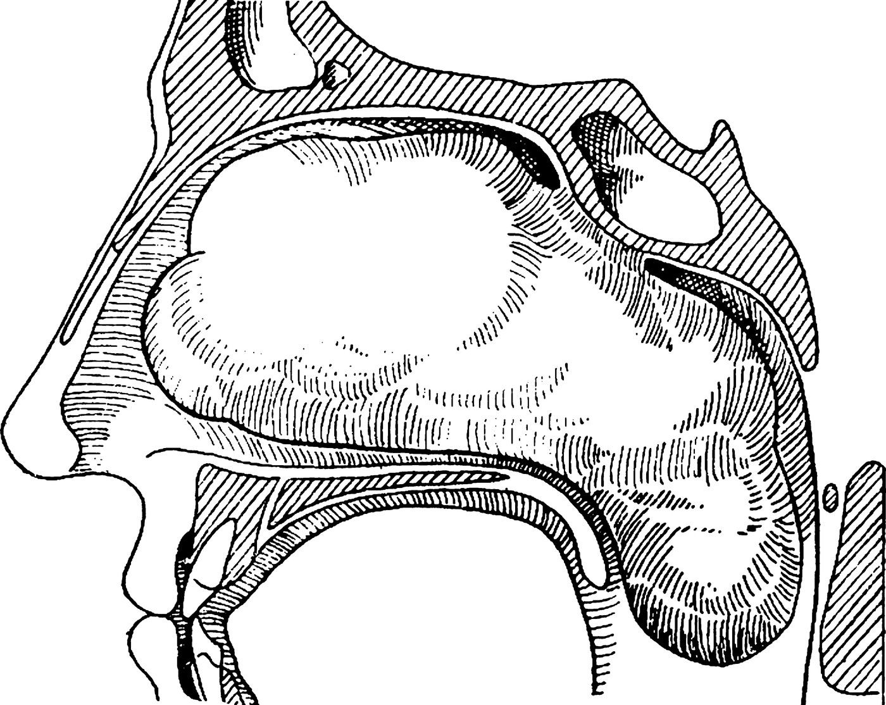
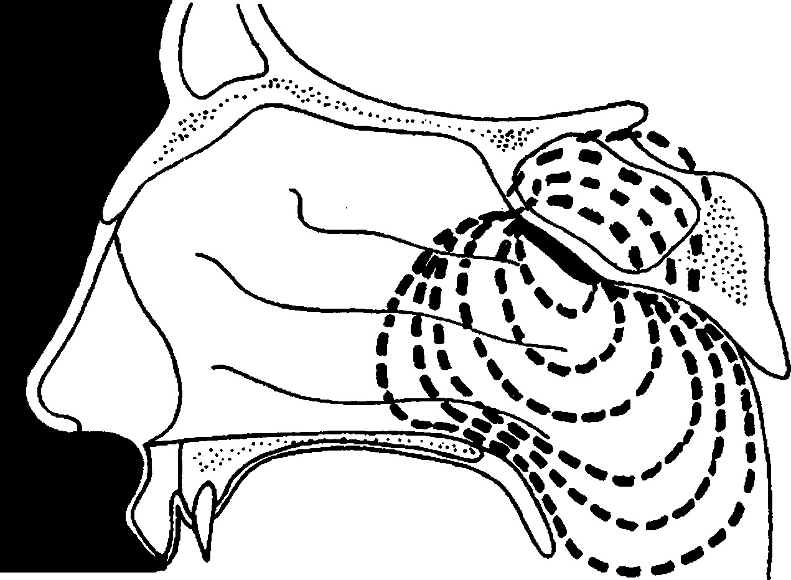
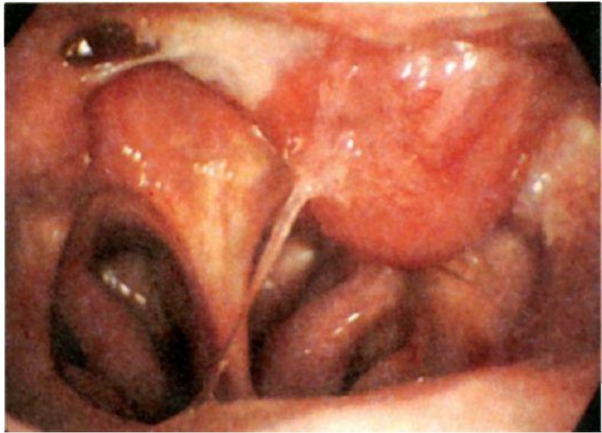
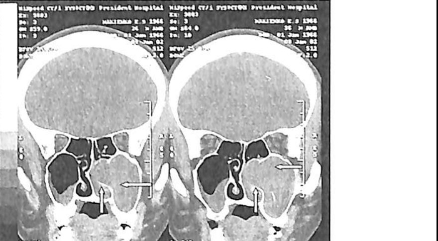
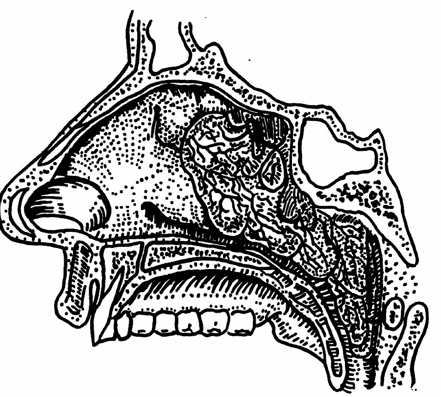
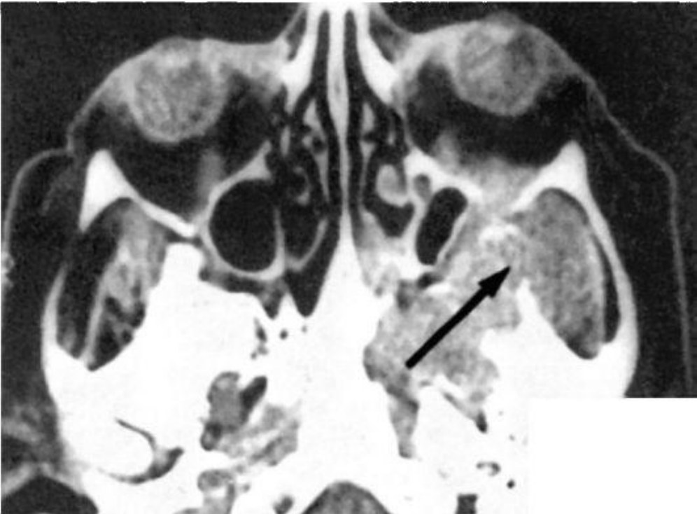
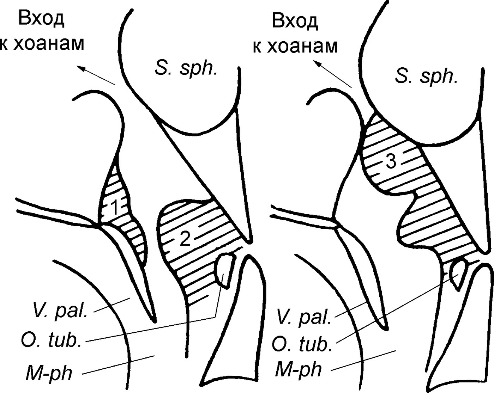
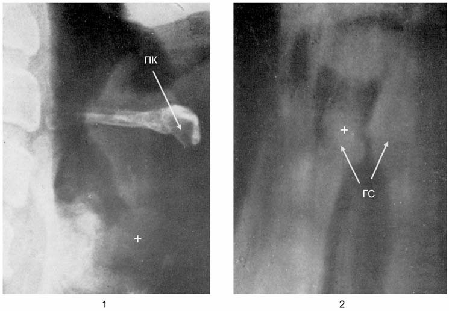

Опухоли глотки
Общие сведения
Опухоли указанной анатомической области подразделяются на собственно опухоли глотки и окологлоточные (парафарингеальные) опухоли; по локализации они делятся на эпи-, мезо- и гипофарингеальные опухоли. По происхождению опухоли глотки делятся на эпителиальные из слизистой оболочки, железистые из слизистых желез глотки, лимфоидные и ретикулярные из лимфаденоидного аппарата глотки. Парафарингеальные опухоли возникают в окологлоточном пространстве и подразделяются на смешанные опухоли, происходящие из глоточных отрогов околоушной железы, невромы, возникающие в заднем субпаротидном пространстве, и ретрофарингеальные дизэмбриогенетические хордомы. по: Бабияк и соавт., т. 1, с. 677
Новообразования верхних дыхательных путей и уха встречаются сравнительно часто и составляют около 6–8% новообразований человека всех локализаций. Особенности клинического течения, диагностика, эффективность лечения и прогноз зависят от локализации и распространенности новообразования. В соответствии с Международной классификацией, в основу которой положены гистологические различия и особенности клинических проявлений, среди новообразований верхних дыхательных путей и уха выделяют доброкачественные и злокачественные опухоли, а также опухолеподобные образования.
Клинические проявления раскрывают особенности роста новообразования, его способность метастазировать, прорастать в окружающие ткани; однако окончательное суждение о характере образования обычно устанавливается лишь с учетом результатов гистологического исследования. Опухоли могут исходить из эпителиальной, соединительной, мышечной, нервной, а также других тканей. Среди ЛОР-органов наиболее часто они обнаруживаются в гортани; на втором месте по частоте стоят нос и околоносовые пазухи, затем глотка. Среди различных новообразований верхних дыхательных путей опухолеподобные образования, доброкачественные и злокачественные опухоли носо-, рото- и гортаноглотки по частоте находятся на третьем месте после гортани и носа. по: Пальчун, Магомедов, Лучихин, учебник, с. 690, 697
К опухолеподобным образованиям относят патологические процессы и состояния, которым свойственны некоторые признаки истинных опухолей — рост, склонность к рецидивам после удаления. В отличие от истинных доброкачественных опухолей они не склонны к малигнизации. Этиология этих новообразований, как правило, известна (травма, хронический воспалительный процесс). по: Нац. руководство, 2016, с. 844
Этиология опухолей до настоящего времени окончательно не выяснена. Считают, что опухоли глотки имеют троякое происхождение: развиваются в самой глотке, прорастают в глотку из полости носа и околоносовых пазух, прорастают в глотку из полости черепа.
Классификация
По гистологическому строению различают 3 группы опухолей глотки: высокодифференцированные (фиброма носоглотки, юношеская ангиофиброма), дифференцированные, низкодифференцированные, среди которых различают 3 группы: эпителиальные злокачественные (гистологически различают плоскоклеточный ороговевающий и неороговевающий рак, аденокарциному, солидный, сосочковый низкодифференцированный рак), соединительнотканные, нейроэктодермальные.
Доброкачественные опухоли глотки: фиброма, нейрофиброма, ангиома, липома, папиллома, хондрома, хоанальные полипы, аденома, ретенционные кисты, тератома, невринома, смешанная опухоль. Злокачественные опухоли: рак, саркома, меланома, опухоли тонзиллярной группы (лимфоэпителиома, ретикулоцитома, переходноклеточный рак). Промежуточное положение между доброкачественными и злокачественными опухолями по клиническому течению занимает фиброма основания черепа. Среди предраковых состояний выделяют лейкоплакию, дискератозы, папилломы (особенно мягкие), аденомы.
Степень распространения опухоли (tumor) обозначается следующим образом. по: Богомильский, Чистякова, с. 317–319
- Т1 — опухоль занимает одну часть органа.
- Т2 — две его части.
- Т3 — опухоль распространяется за пределы органа.
- Т4 — для носоглотки при поражении опухолью кости.
Метастазы в регионарные лимфатические узлы (nodi lymphatici): N0 — не определяются при пальпации; N1 — определяются в виде подвижных гомолатеральных узлов; N2 — определяются в виде подвижных двусторонних узлов; N3 — определяются в виде контралатеральных неподвижных односторонних или двусторонних узлов; M — отдаленные метастазы (metastases). по: Богомильский, Чистякова, с. 319
Доброкачественные опухоли глотки
Доброкачественные опухоли глотки отличаются весьма медленным ростом и, в большинстве своем, обнаруживаются случайно, если они не достигли такого размера, при котором возникают функциональные нарушения. Доброкачественные опухоли глотки, по данным одних авторов, возникают реже злокачественных опухолей глотки, по данным других — так же часто или даже чаще. по: Бабияк и соавт., т. 1, с. 677
Доброкачественные опухоли глотки в учебнике Пальчуна для колледжей
К доброкачественным опухолям глотки относят фиброму, папиллому, волосатый полип, ангиому, невриному, нейрофиброму, смешанные опухоли, липому, кисты, заглоточный зоб. Чаще других встречаются папилломы и фибромы на ножке.
Папиллома
Папилломы глотки обычно мягкие, располагаются на мягком нёбе и нёбных дужках, имеют небольшие размеры и, как правило, мало беспокоят больных. В ряде случаев папилломы исходят из носоглотки, боковых стенок глотки, язычной поверхности надгортанника и его края. В детском возрасте редко возникает папилломатоз в области мягкого нёба, язычка, нёбных дужек и боковых стенок глотки. Среди взрослых папилломы чаще обнаруживают у женщин в возрасте 20–40 лет. Диагностика по внешнему виду опухоли и данным гистологического исследования трудностей не представляет. Лечение заключается в удалении одиночных папиллом с последующей гальванокаустикой; участки папилломатозного перерождения слизистой оболочки могут быть подвергнуты глубокому криовоздействию. Рецидивы заболевания при одиночных папилломах редки, при папилломатозе обширных участков слизистой оболочки рецидивы могут быть многократными. Учитывая возможность перерождения в рак, необходимо своевременное и радикальное лечение.
Юношеская фиброма носоглотки
Среди доброкачественных опухолей носоглотки наиболее часто встречается фиброма глотки, как правило, у юношей в возрасте 10–20 лет, поэтому ее называют юношеской (ювенильной). После 25 лет юношеская фиброма претерпевает обратное развитие. Считают, что фиброма носоглотки возникает из аномально отшнуровавшихся в эмбриональном периоде остатков мезенхимной ткани в носоглотке. Строма фибромы состоит из разнообразно расположенных соединительнотканных волокон и очень большого количества кровеносных сосудов. Обычно опухоль берет начало из тела клиновидной кости, фасции и задних клеток решетчатого лабиринта. Это сфеноэтмоидальный тип фибромы; увеличение такой опухоли ведет к прорастанию в решетчатый лабиринт, клиновидную пазуху, полость носа и верхнечелюстную пазуху, орбиту. В соответствии с направлением роста фибромы возникают асимметрии лица, сдавливаются и деформируются окружающие костная и мягкая ткани, что может вызывать смещение глазного яблока, нарушение кровоснабжения различных отделов мозга, сдавление нервных образований. Таким образом, доброкачественную по гистологическому строению опухоль по клиническому течению характеризуют как злокачественную, хотя она и не обладает инфильтрирующим ростом и метастазированием; такую опухоль следует расценивать как условно доброкачественную.
Диагностику проводят на основании отмеченных симптомов с учетом данных эндоскопического, рентгенологического (в том числе компьютерного), а в ряде случаев и ангиографического исследования. При передней и задней риноскопии можно видеть округлую, гладкую или бугристую опухоль ярко-красного цвета, плотную при ощупывании зондом. Фиброма обычно заполняет носоглотку и может свисать в средний отдел глотки. Пальпаторно определяют плотную опухоль, ножка которой начинается в верхнем отделе носоглотки. При пальпации опухоль обильно кровоточит. Фиброму нужно дифференцировать от хоанального полипа, аденоидов, папилломы, саркомы, раковой опухоли, аденомы. Лечение только хирургическое и максимально радикальное, так как возможны рецидивы.
Ангиома
Ангиома глотки — относительно частое доброкачественное новообразование и может исходить из различных ее отделов. Чаще ангиома бывает небольших размеров, иногда имеет форму полипа. Маленькие ангиомы длительное время могут не увеличиваться, не беспокоят больного, их обнаруживают лишь при осмотре. Ангиомы средних и больших размеров вызывают ощущение инородного тела в носоглотке, затрудняют носовое дыхание, могут кровоточить. Различают гемангиомы и лимфангиомы; последние заполнены лимфой, светло-желтые, обычно больших размеров, содержат больше соединительной ткани, встречаются реже. Гемангиомы бывают капиллярные, кавернозные и ветвистые, имеют синюшный или темно-фиолетовый цвет, широкое основание, чаще локализуются на мягком нёбе, нёбных дужках, боковых и задней стенках глотки, могут достигать больших размеров. Лечение хирургическое, применяют также электрокоагуляцию. Иногда с осторожностью используют склерозирующую терапию.
Волосатый полип
Волосатый полип относят к врожденным опухолям, встречается он обычно в возрасте до 1 года, исходит чаще из задней поверхности мягкого нёба или боковой стенки глотки, имеет длинную ножку, покрыт кожей с нежными волосками. При гистологическом исследовании в волосатом полипе обнаруживают в основном жировую ткань, в которую включены зародышевые остатки и хрящевые элементы. Полип затрудняет дыхание и сосание; имея длинную ножку, перемещается по глотке, выбрасывается в полость рта, что еще больше затрудняет дыхание. Диагностика обычно проста. Лечение хирургическое: полип перевязывают у основания и отсекают; кровотечения не бывает; рецидивы не возникают.
Кисты глотки
Кисты глотки не относят к истинным опухолям. Они локализуются в различных отделах глотки, чаще в миндалинах — фолликулярные (или ретенционные), заполнены мутноватым или гноевидным отделяемым; встречаются интрамуральные (или внутристенные) кисты на мягком нёбе, слизистой оболочке глотки. Интрамуральные в отличие от ретенционных имеют внутреннюю эпителиальную выстилку, их называют истинными кистами. Закупорка выводных протоков слизистых желез или желез Вебера (элементы слюнных желез) в слизистой оболочке глотки приводит к образованию кист. Истинные кисты имеют внутреннюю эпителиальную выстилку, заполнены обычно светлым слизистым содержимым. Размеры чаще небольшие, поэтому особых беспокойств обычно не вызывают, однако иногда возникает ощущение инородного тела в глотке; в раннем возрасте кисты корня языка могут вызывать удушье. Диагностика обычно проста, однако при локализации на корне языка кисты следует дифференцировать от эктопии щитовидной железы. Лечение хирургическое. Удаление истинной кисты необходимо проводить вылущиванием целиком, так как даже минимальный остаток стенки кисты приводит к рецидиву.
Невриномы, смешанные опухоли, эндотелиомы
Невриномы, смешанные опухоли, эндотелиомы и другие опухоли в глотке встречаются редко. Они располагаются подслизисто, обладают медленным неинфильтрирующим ростом, в редких случаях могут озлокачествляться. Диагностика возможна только при гистологическом исследовании. Лечение хирургическое: опухоль вылущивают под слизистой оболочкой и удаляют вместе с капсулой. по: Пальчун, учебник для колледжей, с. 271–274
Описанные в учебнике доброкачественные опухоли глотки сведены в таблицу: для каждой указаны типичный возраст, излюбленная локализация, внешний вид и способ лечения.
Таблица 1. Доброкачественные опухоли глотки (составлено по: Пальчун, учебник для колледжей, с. 271–274)
| Опухоль | Возраст | Локализация | Внешний вид | Лечение |
|---|---|---|---|---|
| Папиллома | Взрослые, чаще женщины 20–40 лет; у детей редко папилломатоз | Мягкое нёбо, нёбные дужки; реже носоглотка, боковые стенки, надгортанник | Мягкая, небольших размеров | Удаление с гальванокаустикой; при папилломатозе — криовоздействие |
| Юношеская фиброма | Юноши 10–20 лет; после 25 лет обратное развитие | Тело клиновидной кости, задние клетки решетчатого лабиринта; заполняет носоглотку | Округлая, гладкая или бугристая, ярко-красная, плотная, обильно кровоточит при пальпации | Только хирургическое, максимально радикальное |
| Ангиома | Любой | Мягкое нёбо, нёбные дужки, боковые и задняя стенки | Гемангиома — синюшная или темно-фиолетовая, на широком основании; лимфангиома — светло-желтая | Хирургическое, электрокоагуляция, с осторожностью склерозирующая терапия |
| Волосатый полип | До 1 года (врожденная опухоль) | Задняя поверхность мягкого нёба, боковая стенка | На длинной ножке, покрыт кожей с нежными волосками | Перевязка у основания и отсечение |
| Истинная (интрамуральная) киста | Любой; у детей кисты корня языка могут вызывать удушье | Мягкое нёбо, слизистая оболочка глотки, корень языка | Со светлым слизистым содержимым | Вылущивание целиком |
| Невринома, смешанная опухоль, эндотелиома | Любой | Подслизисто | Медленный неинфильтрирующий рост | Вылущивание вместе с капсулой |
Доброкачественные опухоли носоглотки
Эти опухоли имеют исходную точку в области хоан, или свода носоглотки, или латеральной его стенки. Большинство из них мезенхимального происхождения — фибромы, липомы, эндохондромы и т. п. Реже встречаются опухоли эпителиального происхождения — папилломы, кисты и др. Очень редко наблюдаются опухоли эмбрионального происхождения — тератомы. Фиброзные опухоли встречаются в основном в юношеском возрасте, у грудных детей чаще наблюдаются дермоидные кисты, у взрослых — хоанальные полипы и ретенционные кисты. по: Бабияк и соавт., т. 1, с. 678
Фиброма носоглотки
Фиброма носоглотки развивается почти исключительно у мальчиков 10–13 лет, однако в литературных источниках второй половины XX в. нередко встречаются описания этой опухоли у лиц старше 30 лет. До завершения полового созревания она обладает интенсивной потенцией роста, после чего опухоль подвергается обратному развитию. Однако до этого времени из-за интенсивного роста опухоли и врастания ее в окружающие пространства она успевает нанести порой непоправимый вред соседним органам, благодаря чему в клиническом отношении эту опухоль называют относительно доброкачественной или доброкачественной опухолью со злокачественным клиническим течением. Такую же характеристику получили и переходноклеточные (инвертированные) папилломы этой области, обладающие инвазивным ростом и в клиническом плане мало чем отличающиеся от эпителиом.
Фиброма носоглотки — это фиброзная плотной консистенции опухоль, отличающаяся значительной кровоточивостью, из-за чего получила название ангиофибромы. Эта опухоль известна еще со времен Гиппократа, который предложил для удаления этой опухоли так называемый трансназомедиальный подход путем раздвоения пирамиды носа. Французский хирург Nélaton дал ей название фиброзного полипа основания черепа (1853), Naob — носоглоточной фибромы (1898), Coenen — базального фиброида (1922), Friedberg — ангиофибромы (1940).

Исходным местом опухоли чаще всего является свод носоглотки, ее глоточно-основная фасция (базилярный тип опухоли, по Лихачеву А. Г., 1954). Исследования конца XX в. показали возможность развития юношеских фибром носоглотки из крыловидно-челюстной и клиновидно-решетчатой областей.

Этиология заболевания практически неизвестна. Существующие теории дизэмбриогенеза и эндокринной дисфункции проблемы до конца не решили. Эндокринная теория основана на том, что опухоль развивается одновременно с развитием вторичных половых признаков и период ее развития завершается вместе с завершением полового созревания. Замечено также, что при фиброме носоглотки наблюдается нарушение секреции 17-кетостероидов и соотношения таких гормонов, как андростерон и тестостерон.
Патологическая анатомия
Фиброма носоглотки представляет собой весьма плотную опухоль, сидящую на широком основании, тесно спаянном с надкостницей. Прочность срастания с надкостницей настолько велика, что при удалении опухоли путем вырывания иногда вместе с ней удаляются и фрагменты подлежащей кости. Поверхность опухоли покрыта гладкими сосочковыми образованиями бледно-розового или красноватого цвета в зависимости от степени васкуляризации опухоли. Плотность опухоли определяется ее фиброзной природой. Опухоль обладает ярко выраженным экстенсивным ростом, смещая и разрушая все ткани и заполняя все соседние полости, находящиеся на ее пути (хоаны, полость носа, орбита, основная пазуха, нижние отделы носоглотки, придаточные пазухи носа, скуловая и височная ямки и т. п.). При распространении кпереди опухоль заполняет носовые ходы, разрушая сошник, перегородку носа, верхние и средние носовые раковины, проникая в ячейки решетчатого лабиринта, лобную и верхнечелюстную пазухи, деформируя пирамиду носа и нарушая благообразие лица. При распространении кзади и книзу опухоль разрушает переднюю стенку основной пазухи и проникает в нее, иногда достигая гипофиза, распространяется книзу, нередко достигая мягкого неба и ротоглотки.
Таким образом, благодаря экстенсивному росту и разрушающему действию на окружающие органы и ткани фиброма носоглотки в клиническом отношении может быть отнесена к «злокачественным», однако метастазов она не дает и гистологически относится к доброкачественным опухолям. Морфологически она состоит из различной выраженности сосудистых сплетений и соединительнотканной стромы. Опухоль покрыта эпителием, который в области носоглотки носит характер однослойного плоского, а в полости носа — цилиндрического мерцательного эпителия, — факт, объяснимый тем, что опухоль возникает в зоне перехода плоского эпителия в цилиндрический. Сосудистое наполнение опухоли, особенно венозными сплетениями, очень велико. Вены путем резорбции их стенок сливаются, образуя целые «озера» крови с очень непрочными «берегами», травматизация которых (например, струей воздуха при чихании или спонтанно) вызывает профузные, с трудом останавливаемые носовые и глоточные кровотечения. При обратном развитии опухоли в эндотелии сосудов возникают некробиоз, гиалинизация, а в строме — явления воспалительного характера. В итоге нежизнеспособные ткани опухоли подвергаются резорбции, опухоль резко сокращается в размерах и замещается рубцовой тканью.
Симптомы и клиническое течение
Симптомы фибромы носоглотки развиваются медленно и подразделяются на субъективные и объективные. На начальных стадиях развития опухоли возникает постепенно нарастающее затруднение носового дыхания, иногда беспричинные головные боли и «глухие» боли в области основания носа, быстрая умственная и физическая утомляемость, из-за которой дети отстают в усвоении школьной программы, в физическом развитии, часто болеют простудными заболеваниями. Выделения из носа носят слизисто-гнойный характер. Появляются жалобы сначала на незначительные, затем на усиливающиеся носовые кровотечения, из-за которых у ребенка развивается анемия. В дальнейшем опухоль заполняет полость носа, вызывая нарастающее затруднение носового дыхания вплоть до полного его отсутствия. У ребенка постоянно открыт рот, речь становится гнусавой (rhinolalia operta), обтурация слуховых труб вызывает тугоухость, одновременно происходит утрата обоняния и снижение вкусовой чувствительности. При контакте опухоли с мягким небом больные предъявляют жалобы на нарушения глотательной функции, частые поперхивания. Сдавление чувствительных нервных стволов вызывает невралгические глазные и лицевые боли.
При обследовании взору врача представляется бледный ребенок или юноша с постоянно раскрытым ртом, с синими разводами под глазами и припухлым основанием носа. В носовых ходах слизисто-гнойные выделения, которые не могут быть удалены больным посредством высмаркивания из-за обтурации опухолью хоан (экспираторный клапан). После удаления этих выделений отсосом видна утолщенная гиперемированная слизистая оболочка, увеличенные синюшно-красные носовые раковины. После смазывания слизистой оболочки носа адреналином и сокращения носовых раковин в носовых ходах становится обозримой опухоль в виде малоподвижного гладкого, серовато-розового или красноватого образования, заполняющего глубокие отделы носа, сильно кровоточащая при дотрагивании острым инструментом. Нередко опухоль, заполняющая полость носа, сочетается с одним или несколькими банальными вторичными полипами носа.
При задней риноскопии отсутствует типичная картина, при которой хорошо видны хоаны, сошник и даже задние концы носовых раковин. Вместо этого в носоглотке определяется массивная синюшно-красная опухоль, полностью ее заполняющая и резко отличающаяся по виду от банальных аденоидных вегетаций. При пальцевом исследовании носоглотки, которое следует проводить с осторожностью, чтобы не вызвать кровотечения, определяется плотная неподвижная солитарная опухоль.
Сопутствующими симптомами могут быть слезотечение, экзофтальм, расширение корня носа. При двустороннем проявлении этих признаков лицо больного приобретает своеобразный вид, получивший в зарубежной литературе название «лицо лягушки» (facies ranicus; rana — лягушка). При орофарингоскопии может выявляться выбухание мягкого неба, обусловленное наличием опухоли в средних отделах глотки.
Неудаленная опухоль разрастается до огромных размеров, заполняя все риносинусное пространство, орбиту и, выходя за их пределы, вызывает тяжелые функциональные и косметические нарушения. Наиболее грозным осложнением является прободение опухолью ситовидной пластинки и проникновение ее в переднюю черепную ямку. Начальные признаки этого осложнения проявляются синдромом повышения внутричерепного давления (сонливость, тошнота, рвота, инкурабельная головная боль), затем присоединяются признаки ретробульбарного синдрома (выпадение полей зрения, офтальмоплегия, амавроз). Частые геморрагии и нестерпимые головные боли, рвота приводят больного к тяжелому общему состоянию, кахексии, анемии, мало чем отличающихся от состояния при наличии злокачественной опухоли. Нередко такие запущенные состояния, встречавшиеся в прежние времена в малоцивилизованных странах, осложнялись менингитом и менингоэнцефалитом, неминуемо ведущими к гибели больных.
Диагноз устанавливают, как правило, на основании клинической картины возникновения фибромы носоглотки у лиц мужского пола в детском и юношеском возрасте. Распространенность опухоли устанавливают при помощи рентгенологического или МРТ- либо КТ-исследований.
Дифференциальный диагноз при фиброме носоглотки приобретает существенное значение, поскольку от его результата зависит тактика лечения и, возможно, дальнейший прогноз. Фиброму носоглотки дифференцируют с аденоидами, кистами, фибромиксомой, раком и саркомой носоглотки. Основным отличием является ранняя и частая кровоточивость, что совершенно не наблюдается при остальных доброкачественных опухолях данной локализации, а при злокачественных опухолях кровотечение возникает лишь на развитых клинической и морфологической стадиях.
Прогноз зависит от степени распространенности опухоли, своевременности и качества лечения. При небольших опухолях, распознанных в самом начале их возникновения, и радикальном лечении прогноз обычно благоприятный. В запущенных случаях, когда не удается провести радикальное лечение, а частые паллиативные хирургические и иные вмешательства, как правило, завершаются рецидивами и, возможно, малигнизацией опухоли, — прогноз пессимистичный. По зарубежным статистическим данным, смертность во второй половине XX в. при хирургических вмешательствах по поводу фибромы носоглотки составила 2%.
Лечение
Попытки применения консервативных методов лечения (физиотерапевтические, склерозирующие, гормональные) не обеспечивали радикального излечения; единственным способом, с помощью которого нередко наступало полное выздоровление, особенно в сочетании с консервативными методами, явился хирургический. Однако применявшийся прежде классический способ экстракции опухоли путем ее срыва с места прикрепления специальными щипцами пероральным доступом не оправдал себя из-за невозможности удалить фиброзное основание опухоли, прочно спаянное с надкостницей (отсюда — неминуемые рецидивы), и сильнейших, трудноостанавливаемых интраоперационных кровотечений. Для облегчения доступа к опухоли французский ринохирург Nélaton предложил расщеплять мягкое и твердое небо. Разрабатывались и другие доступы к опухоли, например применение ринотомии при помощи паралатероназального разреза Мура или сублабиальной ринотомии Денкера1.
Операция Денкера является предварительным хирургическим вмешательством для образования широкого доступа к внутренним патологическим образованиям риносинусной области и, в частности, к верхнечелюстной пазухе, средним и задним отделам полости носа и основанию черепа (носоглотке, основной пазухе). В запущенных случаях, при прорастании опухоли в скуловую область, в придаточные пазухи, орбиту или ретромаксиллярную область, ее удаляют после создания предварительных подступов. По мнению А. Г. Лихачева, наиболее выгодным доступом к опухоли является трансаксиллярный по Денкеру. В некоторых случаях, в зависимости от гистологических особенностей и распространенности опухоли, лучевая терапия ведет к задержке роста опухоли, ее уменьшению и уплотнению, что способствует уменьшению интраоперационного кровотечения и облегчает ее хирургическое удаление. Такой же эффект оказывает инфильтрация опухоли 96% стерильным спиртом. Оперативное вмешательство проводят несколько раз до завершения полового созревания; когда рецидивы прекращаются, опухоль перестает развиваться и подвергается обратному развитию.
Оперативное вмешательство предусматривает тщательную предоперационную подготовку для улучшения общего состояния организма (нормализация показателей крови, витаминизация, назначение препаратов кальция для укрепления сосудистой стенки, улучшение показателей гемостаза). Подготовка к операции должна предусматривать возможность проведения реанимационных мероприятий, переливания крови и кровезаменителей. Оперативное вмешательство проводят под интратрахеальным наркозом. В послеоперационном периоде проводят те же мероприятия, что и в период предоперационной подготовки больного.
Консервативные методы лечения как самостоятельные не всегда достигают положительного результата; их целесообразно проводить в порядке предоперационной подготовки или при отказе от оперативного лечения. При небольших опухолях может быть применена диатермокоагуляция при эндоназальном подходе у лиц 18–20 лет с расчетом на завершающийся период полового созревания, когда не возникнет рецидивов. В этом же возрасте диатермия может быть применена при небольших послеоперационных рецидивах.
Лучевое лечение показано в основном как защитное, поскольку фиброзная ткань не чувствительна к рентгеновскому излучению, но зато происходит стабилизация роста молодых клеток и новых сосудистых сплетений. При их облитерации ограничивается доступ питательных веществ к опухоли и замедляется ее рост. Лечение радиоактивными элементами, введенными в опухоль, практически не применяется ввиду возможности вторичных осложнений (атрофия слизистой оболочки носа и носоглотки, некротизирующий этмоидит, перфорация неба). В настоящее время радий и кобальт заменены радоном2, который помещают в капсулы из золота. Последние в количестве 5–6 имплантируют в опухоль на расстоянии 1 см друг от друга. Процедуру повторяют через один месяц; этот метод не вызывает столь серьезных осложнений, как при аппликации радия или кобальта.
Гормональная терапия
Основным гормональным средством в лечении фибромы носоглотки является тестостерон, обладающий андрогенным, противоопухолевым и анаболическим действием. Его применяют в различных лекарственных формах (капсулы, таблетки, внутримышечно и подкожно имплантаты, масляные растворы отдельных эфиров или их сочетаний). При фиброме носоглотки препарат назначают по 25–50 мг в течение 5–6 недель. Лечение проводят под контролем содержания 17-кетостероидов3 в моче и повторяют при нормальном содержании в моче этого экскрета. Передозировка тестостерона может привести к атрофии яичек, раннему появлению у детей вторичных половых признаков, нарушению остеогенеза и психики, а также к увеличению содержания 17-кетостероидов в моче. по: Бабияк и соавт., т. 1, с. 678–683
Классификация юношеской ангиофибромы по стадиям
Юношеская (ювенильная) ангиофиброма — опухоль носоглотки, исходящая из ее купола или области крылонёбной ямки, по гистологическому строению имеющая доброкачественный характер, однако по клиническому течению (деструирующий рост, сильные кровотечения, частые рецидивы после операции, прорастание в околоносовые пазухи и даже в полость черепа) проявляющая себя как злокачественное образование. Клиническая картина зависит от стадии распространения процесса. В практической работе удобна следующая классификация юношеских ангиофибром (Погосов В. С. и соавт., 1987). по: Пальчун, Магомедов, Лучихин, учебник, с. 699–701
- I стадия — опухоль занимает носоглотку и (или) полость носа, костная деструкция отсутствует.
- II стадия — опухоль соответствует I стадии, распространяется в крыловидную ямку, околоносовые пазухи, возможна костная деструкция.
- III стадия — опухоль распространяется в глазницу, головной мозг.
- IV стадия — опухоль соответствует III стадии, но распространяется в пещеристый синус, зрительный перекрест и гипофизарную ямку.

Этиология и клиническая картина в других руководствах
Ангиофиброма встречается чаще всего у юношей в возрасте 10–18 лет, поэтому она называется юношеской; после 20 лет она обычно претерпевает обратное развитие. Считается, что фиброма носоглотки возникает из аномалийно отшнуровавшихся в эмбриональном периоде остатков мезенхимальной ткани в носоглотке. Строма фибромы состоит из разнообразно расположенных соединительнотканных волокон и очень большого количества кровеносных сосудов. Источником роста опухоли может быть тело клиновидной кости, глоточно-основная фасция и задние клетки решетчатой кости — это сфеноэтмоидальный тип фибромы. Отсюда опухоль может прорастать в решетчатый лабиринт, клиновидную пазуху, полость носа, глазницу и верхнечелюстную пазуху. Если опухоль растет из области свода носоглотки, то это базальный тип фибромы, она может прорастать по направлению к ротоглотке. Когда фиброма начинается из области крыловидного отростка клиновидной кости, она относится к птеригомаксиллярному типу опухоли и может прорастать в ретромаксиллярное пространство, крылонёбную ямку, внутрь черепа, орбиту и полость носа. В соответствии с направлением роста фибромы возникает асимметрия лица, сдавливаются и деформируются окружающие костные и мягкие ткани, что может привести к смещению глазного яблока, нарушению кровоснабжения различных отделов мозга, сдавлению нервных образований.
В начале заболевания больной отмечает небольшое затруднение носового дыхания, першение в горле, незначительные катаральные явления. В дальнейшем дыхание через одну половину носа полностью прекращается и затрудняется через другую, нарушается обоняние, появляется гнусавость, изменяется голос, лицо приобретает вид аденоидного. Наиболее тяжелый и часто встречаемый симптом — рецидивирующие носовые кровотечения, вызывающие анемию и ослабление организма. Опухоль может сопровождаться гнойным синуситом, гнойным средним отитом, что затрудняет своевременную диагностику. При передней и задней риноскопии можно видеть округлую, гладкую или бугристую опухоль ярко-красного цвета, плотную при пальцевом исследовании или при ощупывании зондом. Фиброма обычно заполняет носоглотку и может свисать в средний отдел глотки. При пальпации опухоль может обильно кровоточить, основание ее определяется в верхнем отделе носоглотки. по: Пальчун, Магомедов, Лучихин, учебник, с. 700–702
Ювенильная ангиофиброма — одна из наиболее часто встречающихся опухолей носоглотки, обладает местно деструирующим ростом, возникает на основании носоглотки у мальчиков и юношей. Гистологически опухоль состоит из соединительной ткани и сосудов различной степени зрелости. Сосудистые элементы расположены хаотично и представлены набором сосудистых образований с утолщёнными или истончёнными стенками.
Клиническая картина довольно характерна. Опухоль растёт сравнительно быстро. Прогрессивно ухудшается носовое дыхание. Наряду с затруднением носового дыхания постепенно снижается слух на одно, реже на оба уха. Для ангиофибромы характерны носовые кровотечения. По мере роста опухоли интенсивность и частота кровотечений увеличиваются. Из носоглотки ангиофиброма проникает в полость носа и околоносовые пазухи, в первую очередь в пазуху клиновидной кости. Опухоль может вызвать деструкцию основания черепа и проникнуть в его полость. При этом к перечисленным симптомам присоединяется головная боль. При задней риноскопии или фиброскопии обнаруживают синюшное бугристо-плотное образование на широком основании. Ценную информацию можно получить при рентгенологическом исследовании, в частности КТ. по: Нац. руководство, 2016, с. 845

Юношеская ангиофиброма носоглотки — одна из типичных и часто встречающихся опухолей носоглотки. Относится к доброкачественным опухолям, хотя нередко имеет склонность к рецидивам и распространяющемуся росту. Встречается исключительно у мальчиков и юношей в возрасте от 8 до 25 лет. Вначале отмечается затруднение носового дыхания, как правило больше одной половиной носа, слизисто-гнойное отделяемое. В этой стадии больной и его родители могут не обращаться к врачу, пока не возникнут внезапные носовые кровотечения — характерный симптом юношеской ангиофибромы. Они повторяются апериодически, могут быть столь обильными, что потребуют неотложной помощи и передней тампонады носа. Иногда по ошибке такую опухоль принимают за аденоиды и производят аденотомию, в результате чего возникает обильное кровотечение, требующее немедленной задней тампонады носа. Кровопотеря при этом может достигнуть критического уровня до 1000 мл, когда необходимо срочное переливание крови. по: Солдатов, Гофман, гл. 3
Среди доброкачественных опухолей носовой части глотки наиболее часто встречается ангиофиброма. Эта опухоль бывает лишь у мальчиков в возрасте 10–20 лет, поэтому называется юношеской (ювенильной). После 25-летнего возраста происходит обратное развитие опухоли. Ангиофиброма растет преимущественно из тела клиновидной кости и участков задних решетчатых клеток. Это сфеноэтмоидальный тип опухоли, характеризующийся тенденцией к прорастанию в носовую полость, верхнечелюстную пазуху, решетчатый лабиринт, орбиту, клиновидную пазуху. Нередко опухоль может выходить из купола носовой части глотки и основной части затылочной кости — базосфеноидальный тип фибромы; при этом наблюдается тенденция к прорастанию опухоли в полость черепа. Если опухоль берет начало от участка крылонебной ямки (птеригомаксиллярный тип), может возникать ее врастание в ретромаксиллярное пространство и носовую полость. Оттесняя ткани, встречающиеся на пути роста, наружу, фиброма вызывает грубую асимметрию лица, нарушение кровообращения разных отделов головного мозга, смещение глазного яблока. В отличие от злокачественных опухолей распространение ангиофибромы в прилегающие органы и ткани происходит не путем инфильтративного роста, а путем сдавливания (деформации анатомических образований) и дистрофических изменений. Такую опухоль нужно оценивать как условно доброкачественную.
Ангиофиброма носовой части глотки представляет собой образование округлой формы с гладкой или крупноузловатой поверхностью, плотное, иногда почти хрящевидной консистенции, ярко-красное при преобладании сосудистых элементов над фиброзными или бледно-розовое в случае обратного их соотношения. На ранних стадиях развития ангиофибромы носовой части глотки ее клинические проявления выражены нерезко: умеренное затруднение носового дыхания, першение в горле, катаральные явления. С ростом опухоли дыхание через одну половину носа полностью прекращается и затрудняется через другую, появляется закрытая гнусавость, изменяется голос, лицо приобретает аденоидный вид. В случае прорастания опухоли в основную кость возникают значительная головная боль, головокружение, рвота. В зависимости от локализации и направления роста опухоли могут возникнуть экзофтальм, снижение зрения, диплопия, глухота и т. п. Наиболее распространенным и тяжелым симптомом ангиофибромы носовой части глотки являются периодически возникающие сильные спонтанные носовые кровотечения, которые становятся причиной развития анемии. по: Заболотный и соавт., с. 416–417
Ангиофиброма основания черепа исходит из купола носоглотки, глоточно-основной фасции или области крылонебной ямки. Доброкачественная по гистологическому строению, она по клиническому течению похожа на злокачественную: инфильтрирующий деструктирующий рост, изнуряющие носовые кровотечения, прорастание в околоносовые пазухи, глазницу и полость черепа, частые рецидивы после операции. Поверхность ангиофибромы гладкая, консистенция плотная или плотно-эластическая; поверхностная слизистая оболочка блестящая, с выраженным сосудистым рисунком. У детей младшего возраста течение заболевания значительно агрессивнее, чем в более старшем возрасте.
Фиброма носоглотки обычно наблюдается у лиц мужского пола в возрасте 10–25 лет. Если опухоль образуется у ребенка моложе 10 лет, то она отличается злокачественным течением и часто рецидивирует. Опухоль имеет широкое основание округлой формы с гладкой или крупноузловатой поверхностью, иногда с сосудами на ней; очень плотная, иногда почти хрящевой консистенции; цвет варьирует от ярко-красного до бледно-розового. Гистологически опухоль доброкачественная. Клинически протекает злокачественно, нередко рецидивирует.
Жалобы больных сводятся к прогрессирующему затруднению носового дыхания, сначала одностороннему, в дальнейшем оно становится невозможным, гнусавости, потере обоняния, снижению слуха в связи с ростом опухоли, спонтанным массивным носовым кровотечениям, обусловливающим резкую анемизацию и общее истощение больного. Когда опухоль достигает значительных размеров, появляются дисфагия и стенотическое дыхание. Опухоль на ощупь твердая, кровоточащая при прикосновении. При фарингоскопии и задней риноскопии виден бугристый конгломерат, выпячивающий мягкое небо. Опухоли свойствен безудержный рост, она узурирует кости, прорастая в полость носа, околоносовые пазухи, полость черепа, глазницу со смещением глазного яблока, вызывая менингит, слепоту, сдавление нервных образований, нарушение гемодинамики мозга, деформацию лица. При распространении в полость черепа появляются головная боль, сонливость, головокружение, рвота, застойные явления на глазном дне, при прорастании в глазницу — расширение зрачка и экзофтальм. Опухоль не изъязвляется и не метастазирует. по: Богомильский, Чистякова, с. 244, 320
Юношеская фиброма (фиброма основания черепа) — наиболее частая опухоль носоглотки. Гистологически относится к доброкачественным новообразованиям, однако безудержный рост с деструкцией окружающих тканей, в том числе костных, склонность к рецидивам после удаления, частые, иногда угрожающие жизни кровотечения дают основание клинически трактовать эту опухоль как злокачественную. Исходным местом фибромы чаще всего является свод носоглотки, направление роста — в полость глотки, носа, околоносовых пазух, в глазницу, заскуловую область, реже в полость черепа. Опухоль встречается в раннем юношеском возрасте у мальчиков. Наблюдается затруднение или полное отсутствие носового дыхания, закрытая гнусавость. Возможна резкая анемия как результат повторных носовых кровотечений, характерных для данного заболевания. При распространенной опухоли в зависимости от направления ее роста могут возникнуть экзофтальм, выпячивание твердого и мягкого неба, деформация наружного носа, лицевого скелета. Прорастание опухоли в полость черепа грозит жизни больного. по: Овчинников, Гамов, с. 214

Диагностика в других руководствах
Диагностика осуществляется на основании отмеченных симптомов с учетом данных эндоскопического (в т. ч. с использованием фиброэндоскопа), рентгенологического, а в ряде случаев и ангиографического исследования. При определении распространения опухолевого процесса решающая роль принадлежит компьютерной томографии и ядерно-магнитно-резонансной томографии. Дифференцировать юношескую ангиофиброму следует с аденоидами, хоанальным полипом, папилломой, саркомой, раковой опухолью, аденомой. Окончательный диагноз устанавливается на основании биопсии, которая представляет определенные трудности и должна производиться только в условиях ЛОР-стационара, где имеются все условия для остановки кровотечения. по: Пальчун, Магомедов, Лучихин, учебник, с. 702

Диагностика ангиофибромы носовой части глотки, как правило, не сложная и основывается на данных эндоскопического, рентгенологического, а в ряде случаев — ангиографического исследования. Опухоль заполняет носовую часть глотки и может свисать в ее ротовую часть. Во время пальпации она очень кровоточит. Дифференциальную диагностику проводят с хоанальным полипом, аденоидами, папилломой, саркомой, раком, аденомой. по: Заболотный и соавт., с. 417
Аденоидные разращения необходимо дифференцировать с ангиофибромой носоглотки (она отличается плотностью, неровной поверхностью, повышенной кровоточивостью). Диагностика фибромы носоглотки основывается на данных анамнеза, клинической картины, результатах рентгенографии, компьютерной томографии. Прогноз фибромы носоглотки зависит от размеров опухоли, быстроты ее роста, возраста и состояния больного. В запущенных случаях, особенно при прорастании опухоли в полость черепа, может наступить смерть от анемии в результате массивных рецидивирующих носовых кровотечений и внутричерепных осложнений. по: Богомильский, Чистякова, с. 266, 326–327
Диагноз ставят с помощью передней и задней риноскопии, пальпации носоглотки, данных рентгенографии. Наиболее ценным для диагноза является метод КТ, позволяющий точно локализовать опухоль, уточнить наличие прорастания ее в том или ином направлении, определить размеры. Дифференциальный диагноз проводят с аденоидами и злокачественными опухолями, в отличие от которых при фиброме основания черепа нет метастазов и изъязвлений. по: Овчинников, Гамов, с. 214–216
Лечение в других руководствах
Лечение — только хирургическое и по возможности радикальное, так как возможны рецидивы. Учитывая быстрый рост опухоли, операция должна быть произведена как можно раньше. Вмешательство выполняется под наркозом; хирургические подходы — эндооральный, эндоназальный и трансмаксиллярный. Могут использоваться модификации радикальных операций по Муру, Денкеру. Во время операции обычно наблюдается сильное кровотечение, ввиду чего необходимо массивное переливание крови. Перед удалением опухоли часто производят перевязку наружной сонной артерии, что значительно уменьшает кровопотерю. В последнее время удаление ангиофибромы производят с применением эндоскопических методов, что значительно уменьшает травматичность операции. В послеоперационном периоде назначается инфузионная, гемостатическая, антибактериальная терапия; при необходимости лучевая дистанционная гамма-терапия. Прогноз при своевременном удалении опухоли благоприятный. по: Пальчун, Магомедов, Лучихин, учебник, с. 703
Лечение хирургическое. Основная трудность, возникающая при выполнении операций по поводу ангиофибромы, — профузное, угрожающее жизни больного кровотечение. Рекомендуемые некоторыми авторами способы склерозирования опухоли с целью уменьшения интраоперационного кровотечения посредством введения спирта или формалина малоэффективны. Облучение больных с этой целью также неоправданно. В связи с этим мы считаем, что операции по поводу ангиофибром носоглотки должны проводить только высококвалифицированные специалисты оториноларингологических клиник крупных медицинских центров.
Опухоль удаляют из широкого наружного доступа: производят разрез по Муру, иногда с рассечением верхней губы по средней линии. Предварительно перевязывают наружную сонную артерию на стороне опухоли (редко обе наружные сонные артерии). Предварительная перевязка наружной сонной артерии приводит к значительному уменьшению интраоперационной кровопотери; широкий наружный доступ обеспечивает радикализм вмешательства, а следовательно, и его высокую эффективность. В последние годы для уменьшения кровопотери проводят эмболизацию приводящих сосудов. по: Нац. руководство, 2016, с. 845–846
Поэтому при повторных кровотечениях аденотомию следует производить под эндотрахеальным наркозом, когда в случае возникшего кровотечения заднюю тампонаду произвести несложно, и затем приступить к удалению опухоли. Удобен подход по Денкеру через верхнечелюстную пазуху, когда обнаруженную в носоглотке и задних отделах носовой полости опухоль распатором тупо отделяют от ее основания на своде носоглотки, что не всегда легко. После удаления производят заднюю тампонаду, тампон держат до 5–7 дней из-за возможности кровотечения. Гистологическое исследование удаленной опухоли обязательно. по: Солдатов, Гофман, гл. 3
Лечение только хирургическое и максимально радикальное. Хирургические подходы: эндооральный, эндоназальный и трансмаксиллярный. При интенсивном кровотечении, возникающем во время операции, как правило, требуется массивное переливание крови. по: Заболотный и соавт., с. 417
Фиброма носоглотки: перед операцией назначают гемостатические средства, проводят эндоваскулярную окклюзию питающих сосудов, склерозирующую терапию 90% этиловым спиртом, криодеструкцию, вызывающие асептический некроз ткани опухоли, в ряде случаев назначают гормональную терапию (тестостерон-пропионат, диместрол). Удаляют опухоль эндоназальным или наружным доступом. В связи со значительной кровопотерей производят переливание крови во время операции и в раннем послеоперационном периоде. В целях уменьшения кровоснабжения опухоли и торможения ее роста предварительно производят перевязку и пересечение наружной сонной артерии с обеих сторон. Оперативные приемы (ротовые и трансмаксиллярные) зависят от локализации и размера опухоли. Опухоли носоглотки часто удаляют через твердое и мягкое небо. Возникающее сильное кровотечение останавливают с помощью задней тампонады, иногда перевязывают наружные сонные артерии. по: Богомильский, Чистякова, с. 327
Лечение хирургическое. Все методы лечения: склерозирующая, лучевая и гормональная терапия, криодеструкция и лазерная коагуляция опухоли, а также эмболизация сосудов, питающих опухоль, и химиотерапия — являются лишь дополнительными к оперативному вмешательству или методом выбора, когда не может быть выполнено оперативное вмешательство. по: Овчинников, Гамов, с. 216
Точка зрения зарубежных авторов
Британское руководство подчёркивает, что в руках опытных ринохирургов эндоскопическое удаление позволяет успешно лечить большинство ювенильных ангиофибром. Опухоль исходит из области клиновидно-нёбного отверстия и крыловидного канала, часто разрушает основание крыловидного отростка и скат и распространяется по естественным отверстиям и щелям; независимо от выбранного доступа хирургу иногда приходится оставлять остатки опухоли у зрительного нерва, пещеристого синуса, внутренней сонной артерии и твёрдой мозговой оболочки. Типичные рентгенологические признаки — расширение клиновидно-нёбного отверстия и смещение кпереди задней стенки верхнечелюстной пазухи. Основные питающие сосуды — верхнечелюстная и клиновидно-нёбная артерии, но питание может идти и из ветвей внутренней сонной артерии. Диагноз устанавливают по типичным признакам на КТ, МРТ и ангиографии; биопсию выполнять не следует из-за риска тяжёлого кровотечения. Ювенильную ангиофиброму рассматривают как сосудистую мальформацию из сосудистых остатков первой жаберной дуги. по: Scott-Brown, т. 1, гл. 113, с. 1268–1269
Хоанальные полипы, кисты и другие доброкачественные опухоли носоглотки
Фибромиксома, или хоанальный полип
Фибромиксома берет свое начало в хоанальной или этмоидо-сфеноидальной области. Внешне эта доброкачественная опухоль выглядит как полип на ножке, который легко удаляется без кровотечения специальным крючком. По сравнению со слизистыми полипами полости носа, консистенция фибромиксомы отличается большей плотностью. Растет в направлении глотки и полости носа. «Старые» фибромиксомы уплотняются, приобретают красноватый цвет и нередко симулируют фиброму носоглотки, однако в отличие от нее не кровоточат и не обладают экстенсивным ростом. Лечение хирургическое.
Синусо-хоанальный полип
Фактически синусо-хоанальный полип — проявление полипозного гайморита, поскольку он исходит из верхнечелюстной пазухи и пролабирует через хоану в носоглотку. Реже он исходит из основной пазухи. Внешне напоминает язык колокола, свисающий в носоглотку и иногда достигающий ротоглотки, располагаясь между ее задней стенкой и мягким небом. Этот полип является псевдокистокистозным образованием беловато-серого цвета овоидной формы, он полностью выполняет носоглотку и вызывает затруднение носового дыхания и тубарные нарушения слуха. Лечение хирургическое.
Носоглоточные кисты
Возникают в результате либо закупорки протока слизистой железы (ретенционная киста), либо глоточного мешка Торнвальда (Thornwald). Это редкие опухоли, характеризующиеся длительной эволюцией и проявляющиеся нарушением носового дыхания и слуха вследствие перекрытия носоглоточного устья слуховой трубы. При задней риноскопии определяется гладкая округлая опухоль серого цвета эластической консистенции. Удаляют кисту при помощи аденотома.
Дермоидные кисты носоглотки
Очень редко встречающиеся врожденные доброкачественные опухоли, чаще наблюдаемые у младенцев. Развиваются очень медленно и производят минимальные функциональные нарушения — сухой рефлекторный кашель и некоторые неудобства при глотании. Как правило, ножка этого «полипа» исходит из боковой стенки носоглотки в окружности носоглоточного устья слуховой трубы и нередко достигает глоточно-надгортанной складки. При обычной фарингоскопии не выявляется, однако при рвотном рефлексе может появиться в ротоглотке в виде продолговатого солитарного полипа беловато-серого цвета с гладкой поверхностью. Поверхность его имеет кожистый вид с сосочками, потовыми и жировыми железами, а также волосками. Под этим слоем находится клеточная ткань, пронизанная венами. В центре опухоли определяется ядро, образованное плотной соединительной тканью, иногда содержащей фрагменты костной или хрящевой ткани, а также поперечнополосатых мышечных волокон (типично для эмбриональных опухолей). Впоследствии киста склерозируется и через некоторое время (месяцы, годы) рассасывается.
Папилломы и липомы — доброкачественные опухоли, редко встречающиеся в верхних отделах глотки и визуально весьма трудно отличимые от банальной аденоидной ткани. Диагноз устанавливают при гистологическом исследовании.
Менингоцеле основания черепа иногда может возникать в носоглотке (чаще всего у детей). Отличается от остальных доброкачественных опухолей тем, что во время плача ребенка увеличивается в размерах. Такие «опухоли» не подлежат лечению, поскольку им сопутствуют другие тяжелые аномалии развития черепа и других органов, обычно несовместимые с жизнью.
Доброкачественная плазмоцитома происходит из ретикулоэндотелиальной ткани и возникает чаще всего в костном мозге; более 80% экстрамедуллярных опухолей этого вида локализуются в верхних дыхательных путях (Gîrbea Șt. et al., 1964). По внешнему виду напоминают полипоидные образования сероватого или розовато-фиолетового цвета, не изъязвляются. Диагноз базируется на гистологическом исследовании. Солитарная плазмоцитома может быть как доброкачественной, так и злокачественной. Доброкачественная плазмоцитома встречается редко и не должна смешиваться с простой гранулемой, состоящей из большого количества плазмоцитов. Злокачественность плазмоцитомы исключается тем, что при рентгенографии не обнаруживают поражений костей, стернальный пунктат не содержит патологических изменений костного мозга4 и миеломных клеток, в моче нет белка Бенс-Джонса и, наконец, при удалении опухоли не наблюдается рецидивов. В большинстве своем плазмоцитомы — это злокачественные опухоли экстрамедуллярной локализации, либо они имеют характер «диффузной» миеломы, составляющей сущность миеломной болезни.
Доброкачественные плазмоцитомы, если они вызывают нарушения функции, удаляют различными хирургическими способами в зависимости от их размера, после чего они не дают рецидивов. Злокачественные плазмоцитомы хирургическому лечению не подлежат. К ним применяют консервативные противоопухолевые методы. по: Бабияк и соавт., т. 1, с. 683–684
Опухолеподобные образования и доброкачественные опухоли носоглотки в других руководствах
Псевдоэпителиоматозная гиперплазия — избыточный рост плоского эпителия с проникновением в строму. Прорастание эпителия вызвано повышенной реактивностью регенерирующего эпителия при хроническом воспалении и язвенных процессах. Данные опухолеподобные изменения эпителия в носоглотке встречают редко. Они чаще развиваются у лиц мужского пола старше 50 лет. При задней риноскопии и пальцевом исследовании обнаруживают плотное, без чётких границ образование у свода носоглотки. Диагноз можно установить только на основании результатов гистологического исследования.
Онкоцитарная метаплазия и гиперплазия (онкоцитоз) — пролиферативный процесс в железистом эпителии. Пролиферация захватывает все железы или большую их часть. Узловой характер пролиферации онкоцитов затрудняет проведение дифференциальной диагностики с оксифильной аденомой. Как и псевдоэпителиоматозная гиперплазия, подобные изменения эпителия встречают редко; локализуются они на верхней и боковых стенках носоглотки.
Доброкачественная лимфоидная гиперплазия (аденоиды) — образование, состоящее из гиперплазированной лимфаденоидной ткани. Заболевание встречают преимущественно у детей, оно представляет собой гипертрофию глоточной миндалины. Заболевание имеет характерную клиническую картину, в которой некоторые признаки сходны с симптомами других опухолеподобных образований и истинных опухолей данной локализации (нарушение носового дыхания, снижение слуха на одно или оба уха).
Киста в носоглотке возникает чрезвычайно редко. Характерны клиническая картина и внешний вид — округлое эластичное образование с гладкой поверхностью. Диагностика кисты не вызывает особых затруднений. При пункции кисты можно получить жидкость, как правило, янтарного цвета. Лечение хирургическое.
Торнвальда болезнь — врождённое опухолеподобное образование носоглотки, представляющее собой мешок из дубликатуры слизистой оболочки, открытый кверху. Иногда отверстие, ведущее в мешок, закрывается, и тогда по клиническим симптомам заболевание напоминает кисту. Симптомы: затруднение носового дыхания, снижение слуха, гнусавость. При задней риноскопии, фиброскопии в носоглотке определяют округлой формы образование, покрытое неизменённой слизистой оболочкой, локализующееся на задней стенке, эластичное при пальцевом исследовании. С помощью передней ринофиброскопии можно у верхней границы образования обнаружить вход в его полость. Заболевание у детей нужно дифференцировать с заглоточным абсцессом, натёчником, доброкачественной опухолью данной локализации. Окончательный диагноз ставят на основании данных гистологического исследования. Лечение хирургическое.
Наиболее распространённые доброкачественные опухоли носоглотки — папиллома и ювенильная (юношеская) ангиофиброма. Папиллома чаще локализуется на задней поверхности мягкого нёба, реже на боковой и задней стенках носоглотки. Папиллому этой локализации несколько чаще встречают у лиц мужского пола. Опухоль имеет характерный вид: она сероватого цвета, на широком основании, с зернистой поверхностью. Изолированное поражение носоглотки возникает очень редко. Окончательный диагноз ставят на основании данных гистологического исследования. Лечение хирургическое. Папиллому можно удалять с помощью ультразвукового дезинтегратора, луча лазера или сургитрона.
Нейрофиброма, шваннома, хемодектома, тератома, менингеома и другие доброкачественные опухоли в носоглотке возникают крайне редко. по: Нац. руководство, 2016, с. 844–846
Из других опухолей носоглотки встречаются «смешанные» опухоли — эпителиомы, отличающиеся медленным ростом с раздвиганием окружающих тканей, легко удаляющиеся, поскольку имеют капсулу. по: Солдатов, Гофман, гл. 3
Опухоли носоглотки обусловливают нарушение носового дыхания, обоняния, речи (закрытая гнусавость), шум и боль в ушах, понижение слуха, позже сукровичное отделяемое из полости носа, нередко гнойный отит, параличи и невралгии черепных нервов, увеличенные регионарные лимфатические узлы. Опухоль может прорастать в полость носа, в глазницу, в полость черепа. Хоанальный полип исходит из верхнечелюстной пазухи, имеет тонкую ножку, спускаясь вниз и кзади, может заполнить всю носоглотку. Удаляют полипной петлей или крючком через нос, реже через рот. От фибромы отличается отсутствием спонтанных кровотечений, более мягкой консистенцией, имеет ножку, ведущую в нос. по: Богомильский, Чистякова, с. 319–320
Доброкачественные опухоли ротоглотки и гортаноглотки
В указанной области иногда могут развиваться опухоли, происходящие из тканей, составляющих морфологическую основу данных анатомических образований, как-то: из эпителия и соединительной ткани, например папилломы, эпителиомы, аденомы, фибромы, липомы, хондромы, реже — сосудистые опухоли: ангиомы, лимфомы.
Папилломы развиваются чаще всего на уровне мягкого неба, на небных миндалинах, реже — на надгортаннике или одном из черпаловидных хрящей. Они могут сочетаться с папилломатозом гортани. Папилломы глотки имеют вид ежевики серовато-розового цвета, часто располагаются на ножке, исходящей из верхушки язычка. Не причиняют беспокойства, если не достигают значительных размеров или не вызывают опасения опухолевого заболевания.
Аденомы возникают из железистого аппарата и относятся к «твердым» гомогенным или кистозным опухолям. Реже встречаются глиомы и миксомы. В гипофаринксе эти опухоли чаще всего возникают на язычной поверхности надгортанника и в грушевидных синусах. Железистые опухоли корня языка являются кистозными образованиями величиной с горошину. Опухоли из дистопированных слюнных желез могут достигать величины грецкого ореха или небольшого яблока. Такие опухоли причиняют значительные затруднения при глотании и подлежат удалению.
Сосудистые опухоли, к которым относятся ангиомы, лимфомы, чаще всего ассоциируются с аналогичными опухолями полости рта и располагаются на корне языка или на небной занавеске. Они могут быть артериальными, венозными, смешанными или иметь кавернозное строение. Ангиомы кровеносных сосудов отличаются цветом от ярко-красного (например, полиповидная телеангиэктазии небной миндалины) до синюшно-багрового (кавернозная ангиома). Лимфомы обычно имеют тускло-желтоватый цвет и отличаются большей плотностью, нежели опухоли, состоящие из кровеносных сосудов. Они, в отличие от ангиом, не подвергаются аррозии, в то время как опухоли из кровеносных сосудов часто являются причиной кровотечений, что служит показанием к их удалению. Обычно такие опухоли относятся к компетенции специалистов хирургической стоматологии.
Соединительнотканные опухоли отличаются большим разнообразием. Фибромы и липомы располагаются на слизистой оболочке; первые имеют серовато-голубоватый цвет, вторые — желтоватый и могут напоминать лимфомы. Фибромы небных миндалин происходят из соединительнотканного слоя. На задней стенке глотки возникают остеомы, хондромы и невриномы.
Опухоли из ткани щитовидной железы исходят из незаращенного эмбрионального щитоязычного канала (canalis thyreoglossus) и развиваются в корне языка (так называемый язычный зоб) непосредственно впереди надгортанника, достигают величины грецкого ореха или куриного яйца. Эти опухоли имеют сферическую форму, располагаются по средней линии в плотной соединительнотканной капсуле и покрыты нормальной слизистой, подвижной относительно подлежащего слоя, в которой иногда проходят расширенные вены. Сначала опухоль вызывает лишь ощущение инородного тела в нижнем отделе глотки, но когда она достигает более значительного размера, возникают нарушения дыхания вплоть до асфиксии, требующей экстренной трахеотомии. Опухоль выявляется при непрямой ларингоскопии и при пальпации, при которой определяется либо флюктуирующее образование (кистозная форма), либо плотная опухоль (паренхиматозная или коллоидная форма).
При небольшой опухоли ее удаляют через рот. При значительной величине опухоли, особенно когда она богато васкуляризирована и вызывает нарушение дыхания, проводят предварительную трахеотомию и под интубационным наркозом опухоль удаляют трансхиоидально. Опухоль удаляют частично, поскольку она может быть единичной и ее тотальное удаление может повлечь за собой развитие послеоперационной микседемы. Перед операцией целесообразно провести исследование с поглощением радиоактивного йода для определения топографии тканей щитовидной железы.
Опухоли щито-хио-надгортанного пространства, ограниченного сзади язычной поверхностью надгортанника, спереди щитоподъязычной мембраной и подъязычно-надгортанной связкой, чаще всего имеют кистозную природу, но могут состоять и из фиброзной ткани или даже носить смешанный характер. В начале развития эти опухоли вызывают легкие нарушения дыхания, особенно при физической нагрузке, однако, по мере их роста нарушения дыхания становятся все более значительными, особенно во сне (храп, апноэ). При непрямой ларингоскопии определяется гладкостенная округлая, покрытая нормальной слизистой оболочкой опухоль, которая смещает надгортанник ко входу в гортань, деформирует черпалонадгортанную складку, расширяя ее и сглаживая гортанно-глоточную борозду. Опухоль удаляют посредством субхиоидальной фаринготомии и рассечения щитоподъязычной мембраны, после чего опухоль становится доступной и легко целиком вылущивается. по: Бабияк и соавт., т. 1, с. 684–686
Доброкачественные опухоли ротоглотки в других руководствах
Новообразования среднего отдела глотки составляют, по данным разных авторов, от 0,5 до 5% всех опухолей человека. Как и новообразования других локализаций, опухолевые поражения ротоглотки делят на опухолеподобные образования и истинные опухоли. Истинные опухоли могут быть доброкачественными и злокачественными. Опухолеподобные образования и доброкачественные опухоли диагностируют в 1,5–2 раза чаще, чем злокачественные. Из доброкачественных опухолей наиболее распространены папилломы. Они часто локализуются на нёбных дужках, миндалинах, слизистой оболочке мягкого нёба и редко на задней стенке глотки. Папилломы глотки — это единичные образования, диаметр которых редко превышает 1 см.
Папиллому среди доброкачественных опухолей глотки встречают довольно часто. Плоскоклеточные папилломы нёбных дужек, миндалин, язычка и свободного края мягкого нёба, как правило, единичны. Папиллома — образование с сероватым оттенком, неровными краями и зернистой поверхностью, подвижное, поскольку чаще всего оно имеет тонкое основание (ножку). Слизистая оболочка вокруг папилломы не изменена. Окончательный диагноз устанавливают на основании результатов гистологического исследования.
Частая опухоль ротоглотки — гемангиома. Она имеет много разновидностей, но в среднем отделе глотки преобладают кавернозные диффузные и глубокие капиллярные гемангиомы. Значительно реже можно встретить ветвистые венозные или артериальные сосудистые опухоли. Гемангиому в среднем отделе глотки встречают несколько реже, чем папиллому. Глубокая капиллярная гемангиома покрыта неизменённой слизистой оболочкой, контуры её нечёткие. По внешнему виду опухоль трудно отличить от невриномы и других новообразований, локализующихся в толще тканей. Кавернозная и венозная гемангиомы чаще всего расположены поверхностно. Они синюшные, поверхность этих опухолей бугристая, консистенция мягкая. Инкапсулированные кавернозные гемангиомы имеют чёткие границы. Ветвистая артериальная гемангиома, как правило, пульсирует, и эта пульсация заметна при фарингоскопии. Поверхность опухоли может быть бугристой. Артериальную гемангиому необходимо дифференцировать в первую очередь от аневризмы (с помощью ангиографии). Границы гемангиомы определить трудно. Это связано с тем, что опухоль распространяется не только по поверхности, но и в глубь тканей, нередко достигая сосудисто-нервного пучка шеи, заполняя зачелюстную область или возникая в виде припухлости, чаще кпереди от грудино-ключично-сосцевидной мышцы.
Смешанную опухоль обнаруживают в среднем отделе глотки так же часто, как и гемангиому. Развивается она из малых слюнных желёз. По частоте возникновения это новообразование уступает лишь папилломе. В связи с большим полиморфизмом её принято называть смешанной опухолью или полиморфной аденомой. В ротоглотке смешанная опухоль может локализоваться в толще мягкого нёба, на боковой и реже задней стенках среднего отдела глотки. Поскольку опухоль возникает и развивается в глубине тканей, на поверхности стенок глотки она видна в виде хорошо очерченной припухлости плотной консистенции, безболезненной при пальпации, с неровной поверхностью. Слизистая оболочка над опухолью не изменена. По внешнему виду отличить смешанную опухоль от других новообразований данной локализации (невринома, нейрофиброма, аденома) не представляется возможным. Окончательный диагноз устанавливают на основании результатов гистологического исследования. Такие опухоли, как липома, лимфангиома и другие, в среднем отделе глотки встречают редко. Из этих опухолей лишь остеому можно диагностировать без гистологического исследования. Она рентгеноконтрастна, однако окончательный диагноз всё же устанавливают на основании результатов гистологического исследования, позволяющего определить морфологическую структуру опухолевого очага.
Клинические симптомы доброкачественных опухолей среднего отдела глотки не отличаются большим разнообразием. Как опухолеподобные образования, так и доброкачественные опухоли в течение определённого времени, на протяжении нескольких лет, ничем себя не проявляют. У 20–25% больных доброкачественные новообразования глотки обнаруживают случайно. У большинства больных с новообразованиями ротоглотки первыми признаками заболевания служат ощущение инородного тела в глотке, першение или другие парестезии. Нередко больные жалуются на сухость в глотке, а иногда и на несильную боль по утрам при глотании слюны (пустой глоток).
Такие новообразования, как папилломы, фибромы, кисты, локализующиеся на нёбных дужках или миндалинах, годами могут не вызывать никаких симптомов; лишь при достижении опухолью больших размеров (1,5–2 см в диаметре) возникает ощущение инородного тела в глотке. Дисфагия более характерна для опухолей мягкого нёба. Нарушение герметичности носоглотки во время глотка приводит к расстройству акта глотания, попаданию жидкой пищи в нос. Такие больные иногда гнусавят. Ощущение инородного тела в глотке и другие парестезии очень рано появляются при новообразованиях корня языка и валлекул. Эти опухоли могут вызвать затруднения при глотании, в том числе попёрхивание при приёме жидкой пищи. Болевые ощущения для доброкачественных новообразований ротоглотки не характерны. Боли при глотании или независимо от глотания могут возникать при невриномах, нейрофибромах и очень редко при изъязвившихся сосудистых опухолях. Кровотечения и примесь крови в мокроте и слюне характерны лишь для гемангиом, а также для изъязвившихся распадающихся злокачественных опухолей.
В диагностике новообразований ЛОР-органов вообще и ротоглотки в частности немаловажное значение имеет тщательно собранный анамнез. Из анамнестических данных важны сведения о возрасте больного, вредных привычках, порядке возникновения симптомов. Для опухолей характерно неуклонное нарастание симптоматики. В ранней диагностике большое значение имеет онкологическая настороженность врачей поликлиник. Очень важно своевременно заподозрить опухоль и провести целенаправленное обследование, причём лишь самое необходимое и информативное, чтобы не терять времени. Продолжительность периода от первого обращения больного до установления диагноза и начала лечения должна быть минимальной.
Основной метод исследования глотки — фарингоскопия. Она позволяет определить локализацию опухолевого очага, внешний вид новообразования, подвижность отдельных фрагментов глотки. Как вспомогательные методы исследования при гемангиомах могут быть использованы ангиография, радионуклидное исследование и КТ. Наиболее информативна ангиография, позволяющая определить сосуды, из которых опухоль получает кровь. Диагноз гемангиомы, как правило, устанавливают без гистологического исследования, поскольку биопсия может вызвать интенсивное кровотечение. Гистологическую структуру опухоли узнают чаще всего после хирургического вмешательства.
Основной метод лечения больных с доброкачественными опухолями среднего отдела глотки — хирургический. Объём хирургического вмешательства зависит от распространённости, гистологической структуры и локализации опухоли. Ограниченные новообразования, такие как папиллома нёбных дужек, могут быть удалены в поликлинике с помощью петли, ножниц или щипцов. Исходное место опухоли после её удаления обрабатывают гальванокаутером или лучом лазера. Аналогичным образом можно удалить фиброму на ножке, небольшую, поверхностно расположенную кисту миндалины или нёбной дужки. Небольшую смешанную опухоль мягкого нёба можно удалить через рот под местным обезболиванием. Чаще при удалении опухолей ротоглотки применяют наркоз, используя в качестве доступа подподъязычную фаринготомию, которую нередко дополняют боковой. Широкий наружный доступ позволяет полностью удалить опухоль и обеспечить хороший гемостаз.
Наружный доступ требуется также при удалении сосудистых опухолей глотки. Перед удалением гемангиом предварительно перевязывают наружную сонную артерию или проводят эмболизацию приводящих сосудов. Вмешательство по поводу этих опухолей всегда сопряжено с опасностью возникновения сильного интраоперационного кровотечения, для остановки которого может потребоваться перевязка не только наружной, но и внутренней или общей сонной артерии. Учитывая возможность интраоперационных кровотечений и тяжесть последствий перевязки внутренней или общей сонной артерии, у больных с парафарингеальными хемодектомами и гемангиомами в течение 2–3 нед до хирургического вмешательства проводят «тренировку» внутримозговых анастомозов. Она заключается в пережатии пальцем общей сонной артерии на стороне локализации опухоли 2–3 раза в день на 1–2 мин. Постепенно продолжительность пережатия увеличивают до 25–30 мин. В начале «тренировки» и в последующем при увеличении продолжительности пережатия общей сонной артерии больной испытывает ощущение головокружения. Это ощущение и служит критерием определения продолжительности пережатия артерии, а также длительности курса «тренировки». Если пережатие артерии в течение 30 мин не вызывает ощущения головокружения, то после повторения пережатия ещё в течение 3–4 дней можно приступить к выполнению операции. Криовоздействие как самостоятельный метод лечения больных с доброкачественными опухолями показано в основном при поверхностных (расположенных под слизистой оболочкой) диффузных гемангиомах. Его можно применять при лечении глубоких гемангиом в комбинации с хирургическим вмешательством. по: Нац. руководство, 2016, с. 847–849, 851–852
Кисты глотки встречаются в различных ее отделах, чаще в миндалинах — фолликулярные (или ретенционные), заполненные гноевидным отделяемым. Бывают интрамуральные (истинные) кисты, имеющие внутреннюю эпителиальную выстилку и заполненные светлым слизистым отделяемым. Истинные кисты локализуются чаще на мягком небе или нёбных миндалинах; размеры их небольшие, поэтому особых беспокойств они обычно не вызывают, однако иногда появляется ощущение инородного тела в глотке. Диагностика кисты не вызывает особых затруднений. При осмотре определяется округлое эластичное образование с гладкой поверхностью. При пункции можно получить жидкость, как правило, янтарного цвета. Лечение хирургическое: электрокоагулятором или скальпелем удаляют кисту с фрагментом подлежащей слизистой с последующим гистологическим исследованием.
Наиболее распространенными являются папиллома, ювенильная (юношеская) ангиофиброма и ангиома. Папилломы обычно мягкие, чаще располагаются на нёбе и нёбных дужках, иногда на задней или боковой стенках глотки и язычной поверхности надгортанника и обычно мало беспокоят больного. Имеют характерный вид: серовато-розового цвета, на широком основании или на ножке. Диагностика по внешнему виду опухоли и данным гистологического исследования трудностей не представляет. Лечение заключается в удалении одиночных папиллом с последующей гальванокаустикой; возможно криовоздействие на участки папилломатозного перерождения. Иногда папилломы удаляют с помощью ультразвукового дезинтегратора, хирургического лазера. При рецидивировании папиллом показано повторное удаление, после чего аппликации 30% проспидиновой мази на раневую поверхность ежедневно в течение 10–15 дней. по: Пальчун, Магомедов, Лучихин, учебник, с. 698–699
К доброкачественным опухолям ротовой полости и глотки относятся фиброма, папиллома, ангиома, невринома, смешанные опухоли. Чаще всего диагностируют папиллому и фиброму на ножке. Они бывают небольших размеров, мягкие, располагаются на мягком небе и небных дужках и, как правило, мало беспокоят больных. Лечение состоит в удалении единичных папиллом с последующей гальванокаустикой их основания. Участки папилломатозного перерождения слизистой оболочки подвергают глубокому криовоздействию. Папилломатоз значительных участков слизистой оболочки часто дает рецидивы. Учитывая возможность злокачественного перерождения папиллом, их необходимо своевременно и радикально удалять.
Сосудистые опухоли — ангиомы — по происхождению подразделяются на гемангиомы и лимфангиомы. Их строение почти одинаково, но первые содержат в полости кровь, а вторые — лимфу. Гемангиомы бывают капиллярными, кавернозными, разветвленными, имеют синюшную или темно-фиолетовую окраску, широкое основание, наиболее часто локализуются на мягком небе, небных дужках, боковых и задней стенках глотки, могут достигать больших размеров. Лимфангиомы отличаются светло-желтой окраской, большими размерами и встречаются реже, чем гемангиомы. Ангиомы небольших размеров являются бессимптомными, лишь изредка возможны заложенность носа и кровотечения. Большие ангиомы создают ощущение инородного тела в носовой части глотки, затрудняя носовое дыхание. Они могут вызывать кровотечения. Лечение хирургическое с применением электрокоагуляции.
Кисты ротовой полости не относятся к истинным опухолям. Они локализуются преимущественно на небных миндалинах, корне языка, реже — на мягком небе. Кисты миндалин, в основном ретенционные, содержат желтоватого цвета гноеродную массу, не вызывают каких-либо ощущений и обнаруживаются случайно. Иногда больные жалуются на ощущение раздражения в горле. Интрамуральные кисты мягкого неба также ничем не проявляются и могут достигать больших размеров, что особенно характерно для тератоидных опухолей. Большие кисты корня языка в раннем детском возрасте могут вызывать нарушение дыхания. Диагностика кист несложна, но в случае локализации на корне языка их следует дифференцировать с эктопией щитовидной железы. Лечение хирургическое — удаление кисты вместе с оболочкой. Интрамуральные кисты мягкого неба необходимо удалять полностью подслизисто с наложением швов на разрез. Даже минимальный оставленный кусочек стенки кисты приводит к рецидиву.
Невриномы глотки могут образовываться из периферических разветвлений шейного симпатического и парасимпатического нервов, включая черепные. Если опухоль захватывает симпатические нервы, то на стороне поражения нередко наблюдается синдром Горнера. В случае вовлечения в процесс блуждающего нерва иногда появляется гемипарез гортани. Сначала опухоль себя никак не проявляет, но по мере роста она может вызвать ощущение сдавливания глотки, затруднение глотания и дыхания. Опухоль локализуется под слизистой оболочкой, никогда не образует язв и не кровоточит, она плотная, эластичная, безболезненная, растет медленно, не метастазирует. Лечение хирургическое: доступ эндооральный, но иногда применяется наружный подход (боковая или срединная фаринготомия).
Зоб корня языка представляет собой опухолевидное образование с широким основанием, покрытое слизистой оболочкой с густой сеткой расширенных вен. Пальпаторно дает ощущение плотноэластической консистенции. Опухоль представляет собой дополнительную щитовидную железу, не связанную с нормальной, или эктопированную железу — единственное в организме сосредоточение тиреоидной ткани. Жалобы больных зависят от размеров опухоли и состоят в ощущении инородного тела, дисфагии, изменении тембра голоса, дыхательных нарушениях. Иногда наблюдается выделение крови изо рта, что связано с травмой пищевым комом поверхностно размещенных вен. Лечение зоба на начальных стадиях развития консервативное: назначают препараты йода, радиоактивный йод. Хирургическое лечение заключается в полном или частичном (если это единственное в организме сосредоточение тиреоидной ткани) удалении опухоли. по: Заболотный и соавт., с. 416, 418–419
Из доброкачественных опухолей глотки наиболее распространены папилломы, ангиофибромы. Могут встречаться также липома, невринома. Выявленные доброкачественные новообразования, даже небольшие папилломы, иногда случайно обнаруженные, подлежат обязательному удалению с последующим гистологическим исследованием. по: Овчинников, Гамов, с. 212
Доброкачественные опухоли гортаноглотки в других руководствах
Из доброкачественных опухолей гортаноглотки наиболее часто встречают папиллому, несколько реже гемангиому, редко новообразования, развивающиеся из мышечной ткани (лейомиому, рабдомиому), невриному, фиброму и др. Наиболее частые симптомы опухолей этой локализации — признаки дисфагии: ощущение инородного тела, затруднение глотания. Болевые ощущения для этих опухолей не характерны. Боль может беспокоить больного только при некоторых видах невриномы. При гемангиомах возможны кровотечения из глотки. Достигая больших размеров, новообразование может сдавливать и прикрывать вход в пищевод, суживать просвет гортани (при расположении опухоли на входе в гортань). Сужение входа в гортань приводит к затруднению дыхания.
Диагноз устанавливают на основании данных анамнеза (последовательность появления симптомов, длительность заболевания), результатов гипофарингоскопии (прямой и непрямой), фиброскопии, рентгенографии и других лучевых методов исследования (КТ, МРТ). Решающее значение при определении вида опухоли (её гистологической структуры) имеет биопсия с последующим гистологическим исследованием. Лечение хирургическое. Небольшие новообразования на тонком основании (ножке) могут быть удалены эндофарингеально при прямой или непрямой фарингоскопии с использованием микроскопа. Расположенные глубоко в тканях большие опухоли (невриномы, лейомиомы, рабдомиомы и др.) удаляют через наружный доступ, в качестве которого используют различные способы фаринготомий. При диффузных гемангиомах с успехом можно применять криовоздействие. по: Нац. руководство, 2016, с. 852–853
Опухоли глотки у детей
У детей чаще встречается саркома (лимфо-, лимфоретикуло- и рабдомиосаркома), исходящая из небных миндалин, реже — раковые поражения с ранним метастазированием в регионарные лимфатические узлы. Тератома глотки у детей составляет 3,4% всех новообразований, является следствием порока развития тканей зародыша. Дермоидные кисты встречаются редко. Недифференцированные и низкодифференцированные опухоли глотки составляют 0,8–3% общего числа злокачественных опухолей. Рост опухоли может быть экзофитным и эндофитным. Ряд новообразований глотки у детей связан с пороками развития: волосатые полипы, хордомы, бранхиогенные опухоли, краниофарингеомы, тератомы.
Тератома развивается из нескольких разнородных тканей, является смешанной опухолью. Потерявшие связь с организмом смещенные клетки не могут получить законченного нормального развития, вследствие чего возникают добавочные образования, быстро растущие, достигающие значительного размера, с клинической картиной тяжелого стеноза гортани, а в некоторых случаях — с признаками злокачественного роста. С возрастом увеличивается частота тератобластом с признаками злокачественного новообразования.
Тератома имеет вид узла или полипа, построена из зрелых, хорошо дифференцированных тканей. Чаще локализуется на боковой стенке носо- и ротоглотки и на задней поверхности мягкого неба. Типичную и наиболее частую форму тератомы представляет волосатый полип глотки, который встречается в раннем детском возрасте. Опухоль солитарная, исходит из задней поверхности мягкого неба либо боковой стенки носоглотки. Располагается позади задних дужек, прикрепляясь к слизистой оболочке боковой стенки глотки, имеет вид вытянутого соскообразного полипа, постепенно истончающегося к ножке, покрыта кожей с нежными волосками. Может иметь тонкую ножку и свисать в полость ротоглотки, препятствуя глотанию и дыханию. Может развиваться бессимптомно, но иногда достигает больших размеров и обусловливает тяжелые расстройства глотания и дыхания. Волосатый полип обычно спускается в носоглотку и находится в гипофаринксе (гортаноглотке). При крике или при резком выдохе полип иногда перемещается в полость рта и при достаточной длине виден снаружи. Иногда дети сосут свой полип, как соску. Волосатый полип чаще наблюдается у девочек и в левой половине глотки. по: Богомильский, Чистякова, с. 317–318, 320–321
Волосатый полип относится к тератоидным образованиям, выявляется в возрасте до 1 года, выходит в основном из задней поверхности мягкого неба или боковой стенки глотки, имеет длинную ножку, изнутри покрыт кожей с нежными волосками. Гистологически в волосатом полипе определяется преимущественно жировая ткань, в которую включены зачаточные остатки и хрящевые элементы. Волосатый полип определяется в первые дни жизни в связи с нарушением дыхания и затруднением сосания. Он имеет длинную ножку, часто (особенно во время плача) выбрасывается в ротовую полость, еще больше затрудняя дыхание. Лечение хирургическое. Полип захватывают щипцами и выводят в ротовую полость, его ножку перевязывают и отсекают. Кровотечение при этом не наблюдается, рецидивы не возникают. по: Заболотный и соавт., с. 417–418
Краниофарингеома (опухоль кармана Ратке, цистаденома гипофиза) — дизонтогенетическая опухоль, исходящая из отщепившегося эмбрионального эпителия первичной ротовой полости, который смещается в диэнцефально-гипофизарную область в процессе эмбриогенеза гипофиза. Большая часть опухоли локализуется в области основания мозга или турецкого седла, растет по направлению к глотке, разрушая турецкое седло. Встречается преимущественно в детском и в молодом возрасте. Имеет относительно длительное течение (от 1 года до 10 лет), может сопровождаться адипозо-генитальным синдромом.
Ретенционная киста иногда встречается на небных миндалинах, задней стенке глотки. Жалобы больных появляются лишь при значительных размерах кисты, которая иногда может вызвать асфиксию. Обычно киста имеет вид рыбьего пузыря, шарообразную форму с гладкими тонкими податливыми стенками. Целость кисты легко нарушается при зондировании или пальпации. Дермоидная киста у новорожденных иногда выступает изо рта и может быть причиной нарушения глотания и дыхания. Фиброма глотки встречается в области миндалин, корня языка или заглоточном пространстве; может достигнуть больших размеров. При пальпации безболезненна. Может обусловить затруднение глотания и дыхания, гнусавый голос. Общее состояние больного не нарушено.
Папилломы (сосочковые фиброэпителиомы, сосочковые полипы) морфологически сходны с папилломами других областей. Опухоль мягкой консистенции представляет собой розовые узелки с неровной поверхностью на небных миндалинах, дужках, язычке, мягком небе. Часто сочетаются с папилломатозом гортани. Обычно развиваются на фоне длительного воспалительного процесса. Различают твердые и мягкие папилломы. Твердые папилломы наиболее многочисленны; имеют основу из грубой соединительной ткани, покрыты многослойным плоским, иногда ороговевающим эпителием; чаще односторонние, обычно достигают величины горошины; сероватого цвета, плотные, напоминают бородавку, не кровоточат; редко рецидивируют. Мягкие папилломы встречаются значительно реже; имеют рыхлую отечную строму, окружающую тонкостенный кровеносный сосуд, покрыты цилиндрическим эпителием; протекают доброкачественно, иногда склонны к самопроизвольному излечению.
Аденома встречается редко, локализуется в различных участках глотки. Имеет вид четко очерченного инкапсулированного узла на широком основании, плотной или студневидной консистенции, сероватого, розоватого или коричневатого цвета, чаще диаметром от 0,5 до 2 см, покрыта утолщенной слизистой оболочкой. Обладает экспансивным ростом. Цилиндрома (цилиндроматозная аденома) редко встречается в глотке, исходит из эпителия слизистых и малых слюнных желез, считается особой разновидностью аденомы. Цилиндрома относится к пограничным опухолям. Клиническое течение длительное, с упорными многократными рецидивами.
Сосудистые опухоли (ангиомы) обычно развиваются в области задней и боковой стенки глотки, на мягком небе и небных миндалинах, а также в области корня языка. Нередко обладают инфильтрирующим ростом и могут прорастать в окружающие органы. Макроскопически опухоли имеют вид полипов красного цвета, иногда достигают больших размеров. Лимфангиомы имеют вид светло-желтых образований, заполненных лимфой, с выраженным рецидивирующим инфильтрирующим ростом, как правило, многокамерные. Нейрогенные опухоли (неврилеммома, неврофиброма) встречаются редко, преимущественно в области боковой и задней стенок глотки. Растут медленно, часто долго не вызывают патологических явлений. При достижении большой величины сдавливают окружающие ткани. Узел овальной или веретенообразной формы, плотноэластической консистенции, покрыт неизмененной слизистой оболочкой, имеет гладкую поверхность, никогда не изъязвляется и не кровоточит, на разрезе желтоватого цвета, инкапсулирован. В глотке также могут быть липомы, лейомиомы, синовиомы, адамантиномы, которые не имеют специфических черт и диагностируются лишь микроскопически.
Экстрамедуллярная плазмоцитома по внешнему виду напоминает ангиоматозный полип, имеет вид узла эластической консистенции, покрытого слизистой оболочкой и расположенного на широком основании, может достигать 3 см и больше. Узлы могут быть одиночными и множественными. Экстрамедуллярная плазмоцитома может иметь доброкачественное течение, иногда рецидивирует после удаления. Известны злокачественные формы, метастазирующие в регионарные лимфатические узлы и кости.
Доброкачественные опухоли имеют медленный экспансивный рост, не рецидивируют и не метастазируют, нечувствительны к облучению. При локализации опухоли в рото- и гортаноглотке на первый план выступают нарушения акта глотания и дыхания. Тератома диагностируется в раннем неонатальном периоде в связи с нарушением дыхания и глотания. Волосатый полип в большинстве случаев диагностируется вскоре после рождения. Диагностика волосатого полипа не представляет затруднений. Диагностика ретенционной кисты основывается на данных осмотра, пальпации, пункции. Прогноз доброкачественных новообразований глотки зависит от своевременности диагностики. При отсутствии прорастания в соседние полости и органы прогноз благоприятный. Прогноз волосатого полипа благоприятный.
Способ операции зависит от локализации и распространения опухоли. Волосатый полип: накладывают лигатуру на ножку опухоли и отсекают ее. Ретенционная киста: производят полное вылущивание стенок кисты, удаление петлей, а при широком основании стенку выкусывают гортанными щипцами или выжигают гальванокаутером, а также проводят криодеструкцию.
Злокачественные опухоли миндалин развиваются медленно. В начале заболевания общее состояние нетяжелое, лихорадки нет. Больных беспокоят ощущение инородного тела в глотке, затрудненное и болезненное глотание, затрудненное дыхание, оталгия. При фарингоскопии отмечается смещение миндалин к средней линии и кпереди без гиперемии и инфильтрации передней дужки и мягкого неба. Экзофитная форма опухоли растет в просвет полости рта. Опухоль возникает в миндалине, реже на мягком небе или на задней стенке глотки, определяется в виде плотного бугристого образования серого или бледно-розового цвета на широком основании, нередко напоминает цветную капусту или петушиный гребень. Эндофитная форма опухоли врастает в подлежащие ткани, имеет вид бугристого плотного инфильтрата, покрытого гиперемированной слизистой оболочкой. Течение эндофитной формы менее благоприятное, чем экзофитной.
Злокачественные новообразования носоглотки
Сначала выявляются признаки аденоидных разрастаний: прогрессирующее затруднение носового дыхания, слизисто-гнойные выделения из носа, головная боль, расстройство речи и глотания, ощущение инородного тела, снижение слуха. Эти опухоли нередко диагностируются поздно. Затем появляются носовые и горловые кровотечения, черепно-мозговые расстройства, усиливается боль при глотании, при распаде опухоли появляется язвенная поверхность, возникает зловонный насморк. Вскоре развиваются метастазы в верхнебоковые шейные лимфатические узлы (под верхней третью грудино-ключично-сосцевидной мышцы). Регионарные метастазы особенно выражены у детей раннего возраста. С возрастом глубокие лимфатические узлы шеи, куда оттекает лимфа из носоглотки, нередко редуцируются, а лимфатические сосуды запустевают, поэтому у детей старшего возраста метастазы в регионарные и отдаленные лимфатические узлы при опухолях носоглотки наблюдаются редко. При прорастании опухоли за пределы носоглотки (Т4) в результате венозного стаза происходит расширение вен головы и шеи, а при распространении в полость черепа возникают параличи черепных нервов. Опухоль можно обнаружить при задней риноскопии или оттягивая мягкое небо. Даже при опухолях Т3–Т4 больные чаще умирают от последствий прорастания опухоли в головной мозг и кахексии без видимых метастазов.
Клиническая картина лимфоэпителиомы носоглоточной миндалины включает быстрое увеличение и уплотнение миндалины, покрытой сначала неизмененной слизистой оболочкой (I стадия). Затем слизистая оболочка изъязвляется, опухоль быстро распространяется на прилежащие отделы мягкого неба или боковые стенки глотки с метастазированием в регионарные лимфатические узлы, которые увеличены, но подвижны (II стадия). В III стадии опухоль распространяется на окружающие ткани, прорастая боковую стенку глотки, врастая в полость носа, околоносовые пазухи; метастатические узлы увеличиваются, превышая величину первичной опухоли, становятся неподвижными. В IV стадии опухоль прорастает мягкое небо, корень языка, дно полости рта, сливаясь с регионарными метастазами, нередко прорастает в полость черепа. Ввиду того что биопсия резко стимулирует рост этой опухоли, биопсию производят после начала лучевого лечения.
Саркома поражает глотку реже, чем рак. Наблюдается преимущественно в младшем возрасте, даже у грудных детей. Местом возникновения саркомы может стать любой участок, где имеется соединительная ткань. Чаще это область свода носоглотки, мягкого и твердого неба, гортаноглотка, особенно часто небные миндалины. В отличие от раковой опухоли саркоме свойственны сравнительно быстрый рост, поздний распад и позднее образование метастазов, за исключением изъязвляющихся сарком, она менее склонна к прорастанию в полость черепа. Рецидивирующие опухоли, наоборот, отличаются бурным ростом. Саркомы глотки метастазируют сначала в подчелюстные лимфатические узлы, затем в лимфатические узлы шеи, расположенные вдоль сосудисто-нервного пучка. Бывают гематогенные метастазы в отдаленные органы.
Основными критериями диагностики опухолей глотки являются клинические признаки, гистологическая верификация, данные компьютерной и магнитно-резонансной томографии, фиброэндоскопии, макро- и микролюминесцентного анализа. При обследовании уточняют стадию опухолевого процесса, метастазы и степень их распространения. Дифференциальная диагностика опухолей глотки проводится с туберкулезом, сифилисом, язвенно-пленчатой ангиной Симановского — Венсана, паратонзиллярным абсцессом, гиперплазией миндалин, поражением миндалин при заболеваниях кроветворного аппарата.
При определении тактики лечения злокачественных опухолей учитывают стадию опухолевого процесса. При I и II стадиях, т. е. в начале заболевания, если лечение начато своевременно, прогноз благоприятный, проводится хирургическое вмешательство с лучевой терапией и химиотерапией. В III стадии злокачественного роста прогноз и возможность лечения определяются характером и локализацией опухоли, преимущественно используют рентгенорадио- и химиотерапию. В IV стадии, как правило, прогноз крайне неблагоприятный, возможно только симптоматическое лечение. по: Богомильский, Чистякова, с. 318–327
Злокачественные опухоли глотки
Злокачественные опухоли глотки — заболевание редкое. По статистическим данным середины XX в., полученным в Ленинградском институте онкологии, из 11 тыс. случаев злокачественных новообразований различной локализации лишь 125 были представлены опухолями глотки. Злокачественные опухоли глотки могут развиваться из всех слоев, образующих этот орган. Так, из поверхностного эпителиального слоя развиваются раковые опухоли (злокачественные эпителиомы), из мезенхимального слоя, поддерживающего эпителиальный и лимфоидный слои, развиваются саркомы соединительнотканного и лимфоидного происхождения. Наряду с этими видами злокачественных опухолей в глотке могут возникать меланосаркомы и тератомы. по: Бабияк и соавт., т. 1, с. 686
Злокачественные опухоли чаще всего бывают представлены раком и реже саркомами. Из всех отделов глотки обычно наблюдается поражение гортанного отдела. Опухоли в глотке имеют вид бугристых выступов на широком основании, красноватой окраски, консистенция их довольно плотная. Злокачественные опухоли метастазируют главным образом в регионарные шейные лимфатические узлы (в 52–86% случаев). На ранних стадиях злокачественные опухоли глотки в любом ее отделе могут не иметь выраженной симптоматики, что затрудняет их своевременную диагностику, а лечение их при далеко зашедших процессах, когда диагностика не представляет затруднений и симптоматика достаточно яркая, может быть малоэффективным. по: Овчинников, Гамов, с. 212
В глотке чаще встречаются карциномы и саркомы, реже наблюдаются лимфоэпителиомы, цитобластомы, ретикулоцитомы, смешанные опухоли. Мужчины болеют чаще, чем женщины, обычно в среднем возрасте. Ранняя симптоматика злокачественных опухолей глотки скудна и малохарактерна. Появляется легкое ощущение неловкости или инородного тела в горле, першение, иногда распирание. В более поздних стадиях отмечается нарушение носового дыхания и заложенность уха, если опухоль в носоглотке; ощущение инородного тела и затруднение проглатывания пищи, а затем и слюны при наличии опухоли в ротоглотке; нарушение проходимости вначале для густой, потом и для жидкой пищи, а также нарушение дыхания, если опухоль в гортаноглотке. Эти явления вначале расцениваются больным как малозначащие, а врач нередко относит к проявлениям хронического фарингита или невроза. по: Пальчун, Магомедов, Лучихин, учебник, с. 703
К злокачественным новообразованиям ротовой полости и глотки относятся рак, лимфоэпителиома, цитобластома, ретикулосаркома, саркома и смешанные опухоли. Лимфоэпителиома (опухоль Шминке), цитобластома и ретикулосаркома составляют отдельную группу опухолей, растущих из лимфаденоидной ткани. Эти опухоли являются высокозлокачественными и низкодифференцированными и в связи с этим чрезвычайно чувствительны к лучевой терапии. С другой стороны, хирургическое вмешательство по поводу этих опухолей нередко приводит к генерализации процесса. Опухоли этой группы растут из миндалин (преимущественно небных или глоточных) или из любого участка глотки, где имеется лимфаденоидная ткань. Эти опухоли называют также тонзиллярными. по: Заболотный и соавт., с. 419–420
Низкодифференцированные опухоли (лимфоэпителиомы, ретикулоцитомы, переходноклеточные раки, цитобластомы) коварны тем, что их метастазирование опережает рост основной опухоли, поэтому сама опухоль может иметь вид обычной гипертрофии миндалины, а шейные лимфоузлы значительно увеличены. Общая закономерность для всей ЛОР-онкологии такова: диагностика опухолей не трудна в поздних стадиях (3 и 4), лечение же очень трудное или безнадежное, и очень трудна диагностика на ранних стадиях (1–2), настолько же успешно лечение. по: Солдатов, Гофман, гл. 3
Злокачественные опухоли глотки в учебнике Пальчуна для колледжей
Сравнительная частота злокачественных опухолей глотки высока; среди них встречаются карциномы, лимфоэпителиомы, цитобластомы, саркомы, ретикулоцитомы и смешанные опухоли. Мужчины болеют чаще, чем женщины, обычно в среднем возрасте. Ранняя симптоматика злокачественных опухолей глотки бедна. Могут появляться легкие ощущения неловкости или инородного тела в горле, непривычного вкусового ощущения, распирания, першения и др. В более поздних стадиях отмечают определенные жалобы на нарушение носового дыхания и заложенность уха, если опухоль локализуется в носоглотке; ощущение инородного тела, мешающего проглатывать пищу, а затем и слюну, при опухоли в ротоглотке; нарушение проходимости вначале для густой, а затем и для жидкой пищи и нарушение дыхания, если опухоль в гортаноглотке. Эти симптомы больные вначале часто расценивают как малозначащие, а врач нередко относит их на счет хронического фарингита или невроза.
Ранний симптом опухоли носоглотки — гиперсекреция слизи, в которой бывает сукровичная примесь; выделения возможны через ротоглотку и нос. Из носоглотки опухоль быстро дает регионарные метастазы. Хирургическое лечение при злокачественных опухолях носоглотки малоприменимо; эффективность лучевого и химиотерапевтического воздействия зависит от чувствительности к ним опухоли. В среднем отделе глотки чаще встречаются карциномы и саркомы. Выраженность симптомов зависит от величины опухоли, ее расположения и наличия или отсутствия распада. Появление дисфагии, поперхивания пищей, болевых ощущений, нарушения голоса, гнилостный запах изо рта указывают на поздний период развития новообразования глотки. В раннем периоде возможно комбинированное лечение — хирургическое и лучевое, в поздних стадиях — только лучевое и химиотерапия. По сравнению с верхними отделами глотки гортаноглотка чаще бывает поражена злокачественными опухолями; как правило, в ней развиваются эпителиальные новообразования — карциномы, иногда смешанные опухоли. Предпочтительна комбинированная терапия, в которой на первое место выступает оперативное удаление опухоли с применением диатермокоагуляции и в дальнейшем лучевое воздействие на пути лимфооттока. по: Пальчун, учебник для колледжей, с. 280
Различия злокачественных опухолей трех отделов глотки, описанные в учебнике, сведены в таблицу: поздние жалобы, по которым опухоль заподозривают, и предпочтительное лечение для каждого отдела.
Таблица 2. Злокачественные опухоли отделов глотки (составлено по: Пальчун, учебник для колледжей, с. 280)
| Отдел глотки | Жалобы в поздних стадиях | Лечение |
|---|---|---|
| Носоглотка | Нарушение носового дыхания, заложенность уха; ранний симптом — гиперсекреция слизи с сукровичной примесью; быстрое регионарное метастазирование | Хирургическое малоприменимо; лучевое и химиотерапия в зависимости от чувствительности опухоли |
| Ротоглотка | Ощущение инородного тела, мешающего проглатывать пищу, затем слюну; поздние признаки — дисфагия, поперхивание, боль, нарушение голоса, гнилостный запах изо рта | В раннем периоде комбинированное (хирургическое и лучевое), в поздних стадиях — лучевое и химиотерапия |
| Гортаноглотка | Нарушение проходимости вначале для густой, затем для жидкой пищи; нарушение дыхания | Комбинированное: удаление опухоли с диатермокоагуляцией, затем облучение путей лимфооттока |
Злокачественные опухоли носоглотки
В подавляющем большинстве случаев (80–95%) злокачественные опухоли носоглотки возникают у лиц мужского пола, причем саркомы — в более молодом, а эпителиомы — в более пожилом возрасте. По некоторым данным, саркомы возникают чаще у женщин. По зарубежным статистическим данным, лица желтой расы болеют чаще (18%) представителей других народов.
Клиническая эволюция злокачественных опухолей носоглотки подразделяется на четыре периода — дебюта, развитого состояния, экстерриторизации и терминальный.

Период дебюта проявляется несколькими клиническими симптомами. Чаще всего, что особенно свойственно лимфоэпителиомам, наблюдаются явления аденопатии, внутренние яремные лимфоузлы приобретают деревянистую плотность и могут быть спаяны с сосудисто-нервным пучком. Одновременно возникают признаки обтурации слуховой трубы (понижение слуха на одно или оба уха, аутофония, шум в ухе), обусловленные распространением опухоли в носоглоточное отверстие слуховой трубы. Распространение опухоли в хоаны затрудняет носовое дыхание сначала с одной, а затем с обеих сторон. Возникают невралгические боли, проявляющиеся сначала интермиттирующей, затем персистирующей оталгией. Чаще всего признаки периода дебюта трактуют как различные банальные (простудные, воспалительные, аллергические и др.) заболевания. Онкологическая настороженность появляется, когда больной предъявляет жалобы на ощущение инородного тела в области носоглотки. Именно в этом случае опухоль становится доступной визуальному распознаванию, а также рентгенодиагностике. На ранних стадиях опухоль можно распознать только при помощи МРТ.
В период развитого состояния все перечисленные признаки периода дебюта приобретают значительную интенсивность, и опухоль достаточно легко выявляется как при задней, так и при передней риноскопии, в зависимости от направления ее роста. Опухоль представляется либо в виде кровоточащего папилломатозного образования с изъязвленной поверхностью (рак), либо плотноватым диффузным образованием на широком основании (саркома). Боли в области уха, носоглотке, в глубинных отделах основания черепа приобретают характер пароксизмов, практически не поддающихся действию обезболивающих средств. На шее пальпируются пакеты плотных лимфатических узлов, спаянных с подлежащими тканями при подвижной коже над ними.
В этом периоде рентгенодиагностика приобретает особое значение, поскольку по ее результатам можно судить о распространенности опухоли, определять тактику лечения и прогноз. Так, на профильных снимках становится возможным выявление опухоли, прорастающей в основную пазуху и в турецкое седло; в аксиальных проекциях по Хиршу визуализируются детали основания черепа и изменения, обусловленные распространением опухоли, в отношении базальных отверстий черепа (заднего рваного, овального и круглого).
Период экстерриторизации опухоли характеризуется ее распространением за пределы анатомического образования, в котором она возникла. Направление ее роста в основном протекает по линии наименьшего сопротивления, т. е. она прорастает в окружающие полости, затем в мягкие ткани и наконец подвергает разрушению костную ткань. При распространении в краниальном направлении опухоль, проникая в основную пазуху и ячейки решетчатой кости, может разрушить дно турецкого седла и ситовидную пластинку и получить простор в средней и передней черепной ямках, в которых рост ее не встречает препятствий. В короткое время возникают признаки повышения внутричерепного давления (головная боль, рвота, брадикардия), признаки ретробульбарных поражений (выпадение полей зрения, слепота), очаговые симптомы, обусловленные поражением черепных нервов, а также психические расстройства. При инвазии в латеральном направлении посредством проникновения в канал слуховой трубы, рваное переднее отверстие опухоль достигает средней черепной ямки с теми же последствиями.
При данном направлении роста опухоли она может врастать в скуловую и височную ямки, вызывая деформацию соответствующих анатомических областей головы. Возникает тризм, невралгические боли области разветвлений I ветви тройничного нерва и упорная оталгия. При распространении опухоли в оральном направлении она, проникая через хоаны, поражает передние околоносовые пазухи и орбиту. Значительно реже опухоль распространяется в каудальном направлении, т. е. в направлении мезофаринкса, где она может поражать мягкое небо, а проникая через латеральную стенку глотки в верхних ее отделах, может пролабировать через заднее рваное отверстие в заднюю черепную ямку и поражать каудальную группу черепных нервов — IX, X, XI и XII (Бабияк В. И. и др., 1996). Кроме этих нервов, инвазия опухоли в полость черепа может поражать и другие черепные нервы, например I–VII, что обусловливает так называемую неврологическую форму злокачественной опухоли носоглотки5.
Продолжительность терминального периода зависит от локализации и степени злокачественности опухоли. Он не столь продолжителен при малодифференцированных саркомах и тератомах и их инвазии в полость черепа, метастазах в легкие и печень. Таким же скоротечным развитием терминального состояния отличаются эпителиомы, распространяющиеся в направлении ротоглотки. Более медленно эволюционируют опухоли тубарного направления, которые в течение многих месяцев могут проявляться лишь заложенностью уха и шумом в нем. Изъязвляющиеся и вторично инфицируемые опухоли отличаются ускоренной эволюцией. Лица в молодом возрасте при наличии такой опухоли могут завершить свой жизненный путь в течение нескольких месяцев. Метастазы возникают редко, они обычно инокулируются в легкие, печень, позвоночник. Больные в терминальной стадии резко анемизированы, ослаблены, кахектичны и погибают от внутричерепных осложнений, вторичных инфекций или профузных аррозивных кровотечений при поражении крупных церебральных, шейных, легочных или абдоминальных кровеносных сосудов.
Диагностика эффективна лишь на стадии дебюта и в самом начале периода развитого состояния, когда применяемое комбинированное лечение может либо излечить больного, либо продлить ему жизнь на 4–5 лет. Однако на практике больные чаще всего попадают в поле зрения к ЛОР-онкологу в период развитого состояния, когда не исключены и метастазы, и явления экстерриторизации опухоли. В этих случаях лечение становится длительным, мучительным с частыми рецидивами и в достаточно большом числе случаев заканчиваетеся безрезультатно.
Успех ранней диагностики опухолей носоглотки, в отличие от опухолей других дыхательных путей, которые хорошо визуализируются, прежде всего должен базироваться на онкологической настороженности врача, к которому обращается больной с такими жалобами, как неподдающаяся лечению заложенность одного уха, понижение слуха на это ухо по воздушной проводимости при хорошей тканевой, постоянные шумы в этом ухе и заложенность носа на этой же стороне, а также постоянные головные боли в глубине носа, повышенная утомляемость и др. Не всегда удается разглядеть опухоль носоглотки при обычной задней риноскопии. Применение современных видеоэндоскопических методов значительно облегчает задачу ранней диагностики, однако важно даже не это, а вовремя заподозрить наличие опухоли. Таким больным должны быть проведены лабораторные исследования, рентгенологическое, но лучше КТ- или МРТ-исследования. После всех указанных мероприятий возможна предварительная биопсия или ее проводят в процессе оперативного вмешательства.
Дифференцировать злокачественные опухоли носоглотки следует с сифилитической гуммой, инфильтративные формы которой весьма похожи на саркомы, поэтому во всех случаях подозрительных новообразований носоглотки следует проводить серологические пробы и гистологическое исследование биоптата.
Болезнь Потта6 с субокципитальной локализацией отличается от злокачественных опухолей носоглотки тем, что возникающая в области задней стенки носоглотки опухоль (результат творожистого распада тела позвонка) определяется при пальпации в виде флюктуирующей припухлости мягкой консистенции, в то время как любая злокачественная опухоль обладает определенной плотностью и не обнаруживает симптома флюктуации. Показано рентгенологическое исследование позвоночника на этом уровне, которое при болезни Потта выявляет деструктивные изменения соответствующих костных структур.
Язвенно-пролиферативная форма волчанки по внешнему виду напоминает распадающуюся раковую опухоль. Такие признаки, как неровный и приподнятый край язвы, его отслоенность, распространение поражения на ротоглотку, бледность слизистой, позволяют лишь заподозрить наличие волчанки. Окончательный диагноз устанавливают при помощи гистологического исследования.
Нередко у детей опухоли носоглотки на начальных стадиях принимают за аденоиды, а возникающие при этом тубарные и слуховые нарушения, обычно наблюдаемые при аденоидных разрастаниях, не способствуют установлению истинного диагноза.
Дифференцировать злокачественные опухоли носоглотки следует и с многочисленными видами опухолей основания черепа, а также с лимфоидными пролиферациями, иногда возникающими в носоглотке при лейкемии. Комплексное обследование больного в таких случаях позволяет дифференцировать истинную опухоль от указанных лимфоидных образований.
Лечение
Лечение злокачественных опухолей носоглотки — задача чрезвычайно сложная и неблагодарная, исчерпывающее или частичное решение которой может быть достигнуто лишь в самом начале заболевания. Попытки хирургического лечения, проводившиеся в прошлом веке, в большинстве случаев не приносили положительного результата: невозможность радикального удаления опухоли ввиду ее раннего прорастания в костную ткань, решетчатый лабиринт и клиновидную пазуху, соседство жизненно важных анатомических образований, неизбежные рецидивы, фактическое «кускование» опухоли, приводящее к массивному метастазированию, — все это заставило ведущих ринохирургов отказаться от хирургического лечения злокачественных опухолей носоглотки и ограничиться консервативными методами лечения (кюри- и глубокая лучевая терапия, кобальтотерапия, химиотерапия), эффективность которых при своевременной диагностике и комплексном лечении достаточно приемлема для столь неблагоприятной локализации злокачественных опухолей. по: Бабияк и соавт., т. 1, с. 686–691
Клиническая картина, диагностика и лечение в других руководствах
Из злокачественных опухолей носоглотки наиболее часто развивается рак. По нашим данным, злокачественные опухоли носоглотки составляют 0,25–2% злокачественных опухолей всех локализаций и 40% злокачественных опухолей глотки. Они чаще возникают у лиц мужского пола. Возраст больных колеблется в широких пределах. Эпителиальные опухоли развиваются преимущественно в возрасте 40 лет и старше, соединительнотканные — чаще у лиц молодого возраста и детей.
Опухоль этой локализации отличается высокой злокачественностью, быстро растёт, разрушает окружающие ткани, в том числе основание черепа. Симптоматика зависит от локализации опухоли. Новообразование, исходящее из боковой стенки в области глоточного кармана (розенмюллерова ямка), быстро нарушает проходимость слуховой трубы (закрывает её глоточное отверстие). В результате этого снижается слух, развивается катаральный отит на стороне поражения. Несколько позже больные замечают нарушение дыхания через соответствующую половину носа. Рак носоглотки растёт инфильтративно, быстро изъязвляется; возникают кровянистые выделения из носа и носоглотки. Нарушение вентиляции околоносовых пазух приводит к развитию в них воспалительного процесса, появляются боли в лобной и затылочной областях. Головная боль может быть вызвана и прорастанием опухоли в полость черепа.
Ранняя диагностика злокачественных опухолей носоглотки затруднена. Нужно обратить внимание на жалобы больного. Обязательно выполняют заднюю риноскопию, по возможности фиброскопию. При инфильтрации тканей и изъязвлении необходимо гистологическое исследование. Нужно учитывать постоянное и быстрое нарастание симптомов. Ценный метод — пальцевое исследование носоглотки, позволяющее определить консистенцию, место прикрепления, распространённость опухоли и т. д. Окончательный диагноз ставят на основании данных гистологического исследования.
Лечение больных со злокачественными опухолями носоглотки — сложная задача. Трудности, возникающие при выполнении операции, связаны в основном с особенностями анатомии этого отдела глотки (глубокое расположение, близость крупных жизненно важных сосудов, спинного и головного мозга). Доступы, использующиеся для удаления доброкачественных опухолей, при злокачественных новообразованиях себя не оправдывают. При выполнении радикального вмешательства по поводу злокачественной опухоли носоглотки некоторые авторы применяют доступ через подвисочную ямку. Травматичность, высокая степень риска, плохие результаты лечения — вот причины того, что этот доступ не получил широкого распространения в клинической практике. Этим, вероятно, можно объяснить широкое применение лучевой терапии при лечении больных со злокачественными опухолями носоглотки. О высокой эффективности лучевого лечения при злокачественных опухолях носоглотки сообщают А. С. Павлов и Л. Д. Стиоп (1985). Согласно их данным, пятилетняя выживаемость составила при опухолях I и II стадий 93%, III и IV стадий — 47,3%. по: Нац. руководство, 2016, с. 846–847
Среди ранних симптомов опухоли носоглотки часто отмечается гиперсекреция слизи с сукровичной примесью; выделения возможны через ротоглотку или нос. Из носоглотки опухоль часто дает регионарные метастазы, прорастает в полость черепа, что сопровождается возникновением болей в челюсти, зубах и ухе одноименной стороны, появлением двоения в глазах и косоглазия. При распаде опухоли отмечаются сильные носовые кровотечения. Диагноз опухоли носоглотки устанавливается на основании отмеченных признаков, гистологического исследования биоптата и данных эндоскопического, пальпаторного и рентгенологического исследований. Хирургическое лечение при злокачественных опухолях носоглотки эффективно только в ранних стадиях, быстрый рост опухоли ограничивает возможности операции; эффективность лучевого и химиотерапевтического воздействия зависит от чувствительности к ним опухоли. по: Пальчун, Магомедов, Лучихин, учебник, с. 704
Клиническая картина опухоли носовой части глотки проявляется сравнительно поздно и зависит от направления роста опухоли. Поражение одной из боковых стенок носовой части глотки вызывает заложенность и шум в ухе, оталгию. Если опухоль локализуется в области свода носовой части глотки, затрудняется носовое дыхание, появляются серозные выделения с примесью крови. Из носовой части глотки опухоль быстро дает регионарные метастазы, прорастает в полость черепа через рваное отверстие, что сопровождается возникновением боли в челюстях, зубах и ухе на той же стороне, явлениями паралича черепных нервов — глазодвигательного, блокового и отводящего, что сопровождается двоением в глазах и косоглазием. При условии распада опухоли этой локализации возникают сильные носовые кровотечения. Диагноз опухоли носовой части глотки ставят на основании описанных симптомов, данных эндоскопического, пальпаторного и рентгенологического исследований. В обязательном порядке следует провести цитологические и гистологические исследования. Хирургическое лечение злокачественных опухолей носовой части глотки часто не представляется возможным. Эффективность лучевой и химиотерапии зависит от чувствительности к ней опухолей. по: Заболотный и соавт., с. 420
Опухоли носоглотки (наблюдаются преимущественно у лиц старше 50 лет) характеризуются весьма злокачественным течением, ранним распадом, прорастанием в окружающие ткани и полость черепа, ранним метастазированием в шейные лимфатические узлы. Злокачественные опухоли в ранних стадиях протекают почти бессимптомно. В дальнейшем симптоматика зависит от локализации, размеров опухоли, направления роста. Одним из наиболее ранних признаков опухоли носоглотки при ее расположении в области свода является постепенно нарастающее, чаще одностороннее затруднение носового дыхания с присоединяющимися слизисто-кровянистыми выделениями из носа (при отсутствии патологии полости носа). Если опухоль прорастает в основание черепа, то в процесс вовлекаются многие черепные нервы, вследствие чего нарушается функционирование височной, жевательной, наружной крылонебной мышц, что приводит к расстройству жевания. Могут появиться диплопия, конвергирующий страбизм (сходящееся косоглазие), расширение зрачка — при поражении глазодвигательного, блокового и отводящего нервов. Потеря чувствительности кожи лба и век, возникновение невралгической боли в надбровной и верхнечелюстной областях объясняется вовлечением в процесс ветвей тройничного нерва. При поражении языкоглоточного, блуждающего и добавочного нервов развиваются односторонний паралич мягкого неба, гортани и глотки с нарушением акта глотания, охриплость, кашель, атрофия и опускание плеча. Появляются тахикардия, одышка. При расположении опухоли на боковой стенке носоглотки может быть триада симптомов: понижение слуха на стороне опухоли, невралгия и анестезия третьей ветви тройничного нерва (область языка, нижней челюсти), расстройства подвижности мягкого неба на стороне опухоли. Мучительная боль в области зубов верхней и нижней челюстей бывает следствием прорастания опухоли в крылонебную ямку. по: Овчинников, Гамов, с. 212–213
Точка зрения зарубежных авторов
В британском руководстве рак носоглотки описан как опухоль с наибольшими среди всех опухолей головы и шеи географическими и этническими различиями заболеваемости: в эндемичных районах (юг Китая, Тайвань, Гонконг, Макао) она до 50 раз выше, чем в районах с низкой распространённостью. В эндемичных районах преобладают низкодифференцированный и недифференцированный типы (типы II и III по классификации ВОЗ), связанные с вирусом Эпштейна — Барр. Пик заболеваемости приходится на четвёртое-пятое десятилетие жизни — на десять лет раньше, чем у других плоскоклеточных раков головы и шеи; факторами риска названы употребление солёной рыбы и консервированных продуктов, особенно в молодом возрасте, и курение. Как маркёр для скрининга используют антитела класса IgA к антигенам вируса Эпштейна — Барр, а более чувствительным и специфичным маркёром, пригодным и для оценки ответа на лечение и выявления рецидива, служит ДНК вируса в плазме.
Самая частая жалоба при обращении — припухлость в верхних отделах шеи (почти у 50% больных); у 30% — носовые симптомы (кровянистые выделения, заложенность носа, носовое кровотечение), примерно у 20% — ушные (тугоухость, шум в ухе, оталгия). Втянутая барабанная перепонка или экссудативный средний отит — очень частая находка, поэтому взрослых с необъяснимым односторонним стойким экссудативным отитом следует обследовать на скрытый рак носоглотки. Головная боль встречается почти у 20% больных; из черепных нервов чаще поражаются V и VI пары, совместное поражение III–VI пар указывает на вовлечение пещеристого синуса. Методом выбора для оценки распространения на основание черепа служит МРТ; КТ полезна для выявления эрозии кортикального слоя кости. по: Scott-Brown, т. 3, гл. 8, с. 110–111
Злокачественные опухоли ротоглотки
Возникают в топографо-анатомическом пространстве, ограниченном сверху проекцией твердого неба на заднюю стенку глотки, снизу — уровнем корня языка. В этом пространстве злокачественные опухоли могут возникать из любой ткани и в любом месте, однако предпочтительной их локализацией являются небная миндалина, мягкое небо и реже — задняя стенка глотки.
Злокачественные опухоли небной миндалины — это в подавляющем большинстве опухоли, поражающие только одну миндалину и возникающие у лиц 40–60 лет, однако описаны случаи возникновения этих опухолей у детей моложе 10 лет. Мужчины болеют чаще женщин в отношении 4: 1. Предрасполагающими факторами являются курение, алкоголизм, атмосферные и профессиональные вредности, сифилитическая инфекция.

Патологическая анатомия
Злокачественные опухоли небных миндалин подразделяются на эпителиальные, соединительнотканные и лимфоретикулярные опухоли. Разновидности этих классов отражены в представленной классификации.
Классификация злокачественных опухолей небных миндалин (по зарубежным публикациям): по: Бабияк и соавт., т. 1, с. 691
Эпителиомы: эпителиомы покровного эпителия спиноцеллюлярного типа; эпителиомы трабекулярные спиноцеллюлярного типа метатипического строения; эпителиомы недифференцированного клеточного строения; эпителиомы ороговевающие.
Лимфоэпителиомы.
Саркомы и лимфосаркомы: фасцикулярная саркома; лимфобластома; лимфоцитарная саркома с атипичными и переходными клетками; гигантоклеточная фолликулярная саркома (болезнь Брилла — Симмерса7).
Ретикулосаркомы: эмбриональные (тератомы) саркомы; дифференцированные саркомы; ретикулолимфосаркомы; ретикулоэндотелиосаркомы; ретикулофибросаркомы; ретикулоэпителиома (по G. Ardoin).
Эпителиомы миндалины относительно часто встречаются во всех стадиях — от незначительного поверхностного изъязвления без регионарной аденопатии до обширных и глубоких изъязвлений с массивной шейной аденопатией. Начало заболевания проходит незаметно, и долгое время рак миндалины остается незамеченным. Первые клинические проявления возникают, когда опухоль вышла за пределы миндаликового ложа и метастазировала в регионарные лимфатические узлы. Именно появление плотного опухолевидного образования в области угла нижней челюсти привлекает к себе внимание больного, и тогда он вспоминает еще и о том, что его беспокоят легкие боли в глотке, усиливающиеся при глотании и отдающие в ухо на этой же стороне. И только после этого больной обращается к врачу, который может увидеть три разные формы заболевания: а) язвенная в виде округлого кратера с неровными краями, дно которого покрыто гранулезными образованиями ярко-красного цвета; б) пролиферативная, напоминающая ягоду ежевики, красного цвета, на широком глубоко внедряющемся в паренхиму миндалины основании; в) криптогенная, напоминающая также ягоду ежевики, красного цвета, закупоривает крипту.
Перечисленные формы могут ускользнуть от внимания врача при беглом поверхностном осмотре и быть принятыми за хронический казеозный криптогенный тонзиллит. Однако беспрепятственное введение в крипту пуговчатого зонда, легко проникающего в паренхиму миндалины, и окрашенность его кровью должны пробудить у такого врача задремавшую было онкологическую настороженность, что должно увенчаться с его стороны решительным действием — направлением больного к ЛОР-онкологу.
На более развитой стадии, когда миндалина достигает значительного размера, диссонирующего с размером противоположной миндалины, оталгия принимает постоянный характер. Развитие опухоли в глубине крипты значительно увеличивает объем миндалины, при этом мягкое небо смещается в противоположную сторону, остальные крипты зияют, а сама миндалина напряжена, отличается деревянистой плотностью и болезненна при пальпации. Регионарные лимфоузлы также увеличены, плотны и спаяны с подлежащей тканью. Общее состояние больного на этом этапе болезни остается хорошим, что также должно насторожить врача, поскольку при хроническом казеозном тонзиллите больные обычно жалуются на слабость, головные боли, повышенную утомляемость.
Терминальный период в нелеченных случаях обычно наступает через 6–8 месяцев после первого морфологического проявления болезни. Больной кахектичен, бледен, резко ослаблен, оталгия проявляется нестерпимыми ушными болями. Такие же боли возникают при глотании, что заставляет больного отказываться от пищи. Обычно на этой стадии опухоль поражает корень языка, вход в гортань, шейные лимфоузлы. Последние достигают значительных размеров, препятствуют движениям головы, сдавливают сосудисто-нервный пучок, что вызывает застойные явления в головном мозге. Сдавление увеличенными лимфоузлами последних черепных нервов приводит к параличам иннервируемых ими мышц. Пораженные лимфоузлы, распадаясь, влекут за собой смертельные аррозивные кровотечения из крупных шейных сосудов.
Лимфосаркома миндалины проявляется увеличением ее объема. До тех пор, пока опухоль не достигла определенной величины, она не причиняет больному никаких расстройств. Затем нарушается дыхание и глотание, позднее — голосообразование. Лишь после того, как у больного появятся на шее пакеты увеличенных лимфоузлов, он обращается к врачу. При фарингоскопии выявляют асимметрию зева, обусловленную значительным увеличением одной из миндалин. Поверхность пораженной миндалины гладкая, иногда дольчатая, розового или красного цвета, мягкоэластической консистенции, в отличие от эпителиомы, которая придает миндалине деревянистую плотность. Особенностью саркомы небной миндалины является то, что длительное время, в отличие от рака миндалины, глотательные движения остаются безболезненными, что нередко сбивает с толку врача, поскольку и гумма небной миндалины также протекает безболезненно. Почти одновременно с увеличением миндалины развивается регионарная аденопатия. Цепочка лимфоузлов простирается от подчелюстной области, вдоль переднего края грудино-ключично-сосцевидной мышцы вплоть до ключицы. Лимфоузлы мягкоэластической консистенции, безболезненны.
Медленное развитие лимфосаркомы длится до тех пор, пока не возникает значительное поражение лимфоузлов, дальше клиническое течение развивается стремительно. Небная миндалина достигает значительных размеров и перекрывает зев; дыхание, глотание и голосообразование резко затруднены. Одновременно возникают нарушения функции слуховой трубы. Очень быстро опухоль покрывается язвами и вторично воспаляется. Повышается температура тела, общее состояние больного прогрессивно ухудшается. Генерализуется аденопатия: увеличиваются претрахеальные, паравазальные, медиастинальные и мезентериальные лимфоузлы. Резко усиливается оталгия. Медиастинальные лимфоузлы давлением на окружающие органы вызывают резкое ухудшение состояния больного. В состоянии нарастающей кахексии, общей интоксикации и при вторичных осложнениях больной погибает в течение первого года болезни.
Дифференциальную диагностику лимфосаркомы небной миндалины проводят с ее банальной гипертрофией, внешне сходной с этой злокачественной опухолью. В этих случаях гемограмма и миелограмма проясняют диагноз. Похоже на лимфосаркому небной миндалины ее туберкулезное поражение, поскольку туберкулезная гранулема сопровождается регионарной лимфопатией. Туберкулезная бацилла, инокулированная в небную миндалину, обусловливает ее прогрессирующую гипертрофию, и только микроскопическое исследование биоптата позволяет дифференцировать эти два заболевания. При сифилисе глотки во вторичном периоде увеличены обе миндалины, а в третичном периоде образование гуммы миндалины не сопровождается характерной для лимфосаркомы регионарной аденопатией. При дифференциальной диагностике следует иметь в виду и тонзилолитиаз, который, в отличие от лимфосаркомы, протекает с болевым синдромом. Аневризма внутренней сонной артерии иногда может симулировать опухоль ретроминдаликовой области; она представляется в виде продолговатой припухлости, покрытой нормальной слизистой оболочкой и пульсирующей при пальпации.
Ретикулосаркома небной миндалины как по клиническому течению, так и по значительной радиочувствительности приближается к лимфосаркоме. Так же, как и эта опухоль, ретикулосаркома дает ранние метастазы в ближайшие и отдаленные органы, часто рецидивирует несмотря на интенсивную лучевую терапию. Из всех морфологических разновидностей ретикулосарком наибольшей злокачественностью отличаются тератомы.
Фибробластическая саркома небной миндалины встречается очень редко и характеризуется безболезненностью в начальном периоде, увеличением одной из небных миндалин, поверхность которой красного цвета и испещрена бороздами. Миндалина отличается значительной плотностью, регионарная аденопатия отсутствует. Пораженная миндалина в течение нескольких месяцев достигает гигантских размеров и изъязвляется. В этот период опухоль инфильтрирует все окружающие ткани — небные дужки, мягкое небо, стенки глотки — и проникает в парафарингеальное пространство, где поражает сосудисто-нервный пучок. Распространение распадающейся кровоточащей опухоли в дорсокаудальном направлении вызывает нарушение глотания, дыхания и голосообразования и в скорости приводит к вынужденной трахеотомии. Прогрессирование заболевания приводит к метастазированию опухоли в шейные лимфоузлы, которые достигают значительных размеров. Смерть обычно наступает при поражении висцеральных органов от прогрессирующей кахексии при мучительных страданиях больного в течение нескольких недель.
Прогноз при злокачественных опухолях миндалины варьирует от благоприятного (при ограниченных инициальных формах без метастазов) до пессимистического (при наличии метастазов и экстерриторизации опухоли).
Лечение
Лечение хирургическое (расширенная тонзиллэктомия при начальной стадии с последующей лучевой терапией) либо, при неоперабельных случаях, — лучевая терапия в сочетании с химиотерапией и симптоматическим лечением. по: Бабияк и соавт., т. 1, с. 692–694
Клиническая картина, диагностика и лечение в других руководствах
Из злокачественных новообразований ротоглотки чаще наблюдают рак, реже саркому, редко встречают лимфоэпителиомы и лимфомы. Злокачественные опухоли развиваются в основном у лиц старше 40 лет. Это положение верно только для злокачественных новообразований эпителиального происхождения. Что касается соединительнотканных опухолей, то их чаще встречают у лиц молодого возраста, а нередко и у детей. Исходная локализация злокачественных опухолей у 58% больных — нёбные миндалины, у 16% — задняя стенка глотки, у 10,5% — мягкое нёбо. Большинство злокачественных новообразований среднего отдела глотки отличаются быстрым инфильтративным ростом и склонностью к изъязвлению; по-видимому, поэтому у 80% больных при поступлении в клинику диагностируют III и IV стадии заболевания и лишь у 20% — I–II стадию. Злокачественные опухоли данной локализации часто метастазируют. Метастазы в регионарных лимфатических узлах обнаруживают у 40–45% больных уже при поступлении, а в отдалённых органах — у 5%.
Злокачественные опухоли среднего отдела глотки растут быстро. Они некоторое время, как правило, несколько недель, значительно реже месяцев, могут оставаться незамеченными. Первые симптомы злокачественных опухолей зависят от их первичной локализации. В дальнейшем по мере роста опухоли количество симптомов быстро увеличивается. Один из ранних признаков опухоли — ощущение инородного тела в глотке. Вскоре к нему присоединяются боли в глотке, которые, как и ощущение инородного тела, строго локализованы. Эпителиальные опухоли склонны к изъязвлению и распаду, вследствие чего у больного возникают неприятный запах изо рта и примесь крови в слюне и мокроте. При распространении опухолевого процесса на мягкое нёбо нарушается его подвижность, развивается гнусавость; жидкая пища может попадать в нос. Поскольку довольно рано возникают расстройства глотания и нарушения прохождения пищи, больные рано начинают худеть. Кроме местных симптомов, вследствие интоксикации и сопутствующего опухоли воспаления развиваются и общие симптомы, такие как недомогание, слабость, головная боль. При поражении боковой стенки глотки опухоль довольно быстро проникает в глубь тканей по направлению к сосудисто-нервному пучку шеи, в связи с чем возникает опасность профузного кровотечения.
Среди злокачественных опухолей ротоглотки преобладают новообразования эпителиального происхождения. Эпителиальные опухоли, в отличие от соединительнотканных, склонны к изъязвлению. Это до некоторой степени определяет клиническую картину заболевания. Внешний вид опухоли зависит от её гистологической структуры, вида, распространённости и в меньшей мере от первичной локализации. Эпителиальные экзофитно растущие опухоли имеют широкое основание, поверхность их бугристая, местами с очагами распада; цвет розовый с сероватым оттенком. Вокруг опухоли — воспалительный инфильтрат. Опухоль легко кровоточит при прикосновении к ней. Инфильтративно растущие эпителиальные опухоли склонны к изъязвлению. Опухолевая язва довольно часто локализуется на нёбной миндалине. Поражённая миндалина увеличена по сравнению со здоровой. Вокруг глубокой язвы с неровными краями, дно которой покрыто грязно-серым налётом, — воспалительный инфильтрат.
Можно провести цитологическое исследование мазков-отпечатков или перепечатков. Несмотря на существование достаточно информативных методов исследования, окончательный диагноз опухоли с определением её вида устанавливают на основании результатов изучения её гистологической структуры. Следует подчеркнуть, что цитологические исследования мазков-отпечатков и перепечатков малоинформативны, поскольку учитывают только результат, при котором обнаружены признаки злокачественного роста; кроме того, этот метод исследования не даёт возможности детального исследования гистологической структуры новообразования.
Биопсия — иссечение кусочка тканей для гистологического исследования — один из важных методов диагностики в онкологии. От того, как взята биопсия, во многом зависит результат гистологического исследования. Общеизвестно, что кусочек ткани нужно взять на границе опухолевого процесса, но определить эту границу не всегда удаётся, особенно при опухолях ЛОР-органов. Новообразования нёбных, глоточной и язычной миндалин, особенно соединительнотканные, возникают в глубине ткани миндалины. Миндалина увеличивается. Увеличение миндалины должно насторожить и требует целенаправленного исследования, в том числе биопсии. Если новообразование находится в глубине миндалины, опухолевые клетки в кусочек тканей, взятых для исследования, не попадают. Такой результат биопсии успокаивает врача и больного, теряется драгоценное время, со временем биопсию повторяют ещё один или два раза, пока опухоль не приблизится к поверхности миндалины. При этом возникают другие признаки опухолевого процесса, который быстро прогрессирует. В случае асимметрии нёбных миндалин при подозрении на опухолевый процесс, если нет противопоказаний, необходимо как биопсию произвести одностороннюю тонзиллэктомию или тонзиллотомию. Иногда такая тонзиллэктомия может оказаться радикальным хирургическим вмешательством по отношению к опухоли.
Изъязвившуюся опухоль миндалины нужно дифференцировать от язвенно-плёнчатой ангины Симановского — Венсана, сифилиса и болезни Вегенера. С этой целью необходимо исследовать мазки, взятые с краёв язвы, и выполнить реакцию Вассермана.
Основные методы лечения при злокачественных опухолях ротоглотки, как и при новообразованиях других локализаций, — хирургический и лучевой. Эффективность хирургического лечения выше, чем облучения и комбинированного лечения, на первом этапе которого проводят облучение. Через рот могут быть удалены лишь ограниченные новообразования, не выходящие за пределы одного из фрагментов данной области (мягкое нёбо, нёбно-язычная дужка, нёбная миндалина). Во всех других случаях показаны наружные доступы — чресподъязычная или подподъязычная фаринготомия в комбинации с боковой; иногда для получения более широкого доступа к корню языка, в дополнение к фаринготомии, производят резекцию нижней челюсти. Операции по поводу злокачественных опухолей выполняют под наркозом с предварительной перевязкой наружной сонной артерии и трахеотомией. Трахеотомию производят под местным обезболиванием, а последующие этапы вмешательства — под интратрахеальным наркозом (интубация через трахеостому).
При поражении нёбной миндалины опухолью, не выходящей за её пределы, ограничиваются удалением миндалины, нёбных дужек, паратонзиллярной клетчатки и части корня языка, прилегающей к нижнему полюсу миндалины. Запас непоражённых тканей вокруг опухолевого очага не должен быть меньше 1 см. Этого правила придерживаются также при удалении распространённых опухолей с помощью наружного доступа.
Лучевое лечение больных с новообразованиями глотки следует проводить по строгим показаниям. Данное лечебное воздействие можно применять только при злокачественных опухолях. Как самостоятельный метод лечения облучение можно рекомендовать лишь в тех случаях, когда хирургическое вмешательство противопоказано или больной отказывается от операции. Комбинированное лечение, первым этапом которого служит операция, мы рекомендуем больным с опухолевым процессом III стадии. В остальных случаях можно ограничиться только операцией. При опухолях, занимающих средний и нижний отделы глотки, распространяющихся на гортань, производят циркулярную резекцию глотки с удалением гортани. После такого обширного вмешательства формируют оростому, трахеостому и эзофагостому. Через 2–3 мес выполняют пластику боковых и передней стенок глотки, восстанавливая тем самым путь проведения пищи. Сравнивая результаты лечения с применением разных методов, мы убедились в высокой эффективности хирургического метода: пятилетняя выживаемость больных после хирургического лечения составила 65±10,9%, после комбинированного (операция + облучение) — 64,7±11,9%, после лучевой терапии — 23±4,2% (Насыров В. А., 1982). по: Нац. руководство, 2016, с. 849–852
При локализации опухоли в среднем отделе глотки (чаще рак или саркома) выраженность симптомов зависит от величины опухоли, ее расположения и наличия или отсутствия распада. Появление болевых ощущений, дисфагии, поперхивания пищей, гнилостный запах изо рта являются признаком поздней стадии опухоли. Метастазирование такого новообразования наступает рано, нередко бывает сразу двусторонним. Дифференцировать злокачественную опухоль среднего отдела глотки нужно с доброкачественными новообразованиями, паратонзиллитом, ангиной при заболеваниях крови, ангиной Симановского — Венсана. Лечение в раннем периоде комбинированное хирургическое (диатермокоагуляция) и лучевое, в поздних стадиях только лучевое и химиотерапия. по: Пальчун, Магомедов, Лучихин, учебник, с. 704
Клинические проявления злокачественных опухолей ротовой части глотки в значительной мере зависят от локализации, формы роста, распространения и гистологического строения новообразования. Наиболее часто в этом отделе встречаются рак, лимфоэпителиома и саркома небных миндалин и небных дужек. В случае рака и лимфоэпителиомы ротовой части глотки наиболее часто встречается инфильтративно-язвенная форма роста новообразования. В таком случае определяется бугристая опухоль с изъязвлениями, инфильтрирующая окружающие ткани. Одним из первых симптомов новообразования этой формы является дисфагия — ощущение дискомфорта и боли при глотании. Саркома, как правило, характеризуется экзофитным ростом, вызывая на ранних стадиях развития ощущение инородного тела в горле. С ростом изъязвленной опухоли наступает нарушение акта глотания, изменяется тембр голоса, появляется боль, иррадиирующая в ухо. Опухоль корня языка вызывает чувство дискомфорта и боль при глотании. В случае распространения опухоли на ямки надгортанника возможно захлебывание. Распад опухоли сопровождается гнилостным запахом изо рта, густой саливацией с примесями гноя и крови в слюне. Метастазирование новообразований среднего отдела глотки наступает рано и чаще всего бывает двусторонним. Особенно рано возникают регионарные метастазы. При лимфоэпителиоме регионарные метастазы размещаются несколько ниже сосцевидного отростка, в зачелюстной и боковых шейных участках. Лимфоэпителиома характеризуется особенно быстрым ростом первичной опухоли и ранней генерализацией.
Распознавание злокачественных опухолей ротовой части глотки основывается на клинических и гистологических данных и не вызывает затруднений. Эти опухоли необходимо дифференцировать с доброкачественными опухолями, воспалительными заболеваниями глотки (паратонзиллит и парафарингит), ангинами при заболеваниях кроветворных органов, ангиной Симановского — Венсана — Плаута. В ранний период возможно комбинированное лечение — хирургическое и лучевое, в поздних стадиях — только лучевое и химиотерапевтическое. В связи с высокой частотой метастазирования целесообразно проводить профилактическое тотальное облучение шеи, что позволяет уменьшить частоту возникновения регионарных метастазов после излечения первичного очага. по: Заболотный и соавт., с. 421–422
Из опухолей миндалин нужно отметить лимфому или лимфосаркому, начинающуюся с симметричного увеличения миндалин, затем появляются язвы с плотным фибринозным налетом. Рост опухоли может распространяться вверх, в сторону мягкого неба с его парезом, некрозом, открытой гнусавостью, попаданием пищи в носоглотку при глотании. Шейные лимфоузлы увеличены, умеренно болезненны. Такая опухоль высоко радиочувствительна и успешно лечится рентгеновскими лучами. Из злокачественных опухолей нередко — меланома. Опухоли глотки вообще чаще встречаются у мужчин в 1,5–7,5 раза по разным авторам.
Рак глотки имеет две формы дифференцированного рака: язвенную и папилломатозную. Рак может поражать как стенки глотки, так и, чаще, миндалины. Для язвенной формы характерно появление ранних иррадиирующих болей ввиду прорастания опухоли в окружающие ткани и раннее метастазирование. Папилломатозная форма более редка, развивается из папиллом у взрослых, протекает поверхностно, но склонна к метастазам. Рак миндалин на ранней стадии необходимо дифференцировать с инфекционными гранулемами — сифилисом, туберкулезом, фузоспирохетозом. по: Солдатов, Гофман, гл. 3
В ротоглотке, главным образом в области миндалин, встречаются рак и различного вида саркомы. И в этом отделе глотки начальные стадии опухолевого процесса протекают бессимптомно, и лишь припухлость шейных лимфатических узлов (в 60–90% случаев) заставляет больного обратиться к врачу. При значительном увеличении опухоли присоединяются ощущения помех в горле, затруднение и боль при глотании, иррадиирующая в ухо; сплевывание крови, обильная саливация, гнилостный запах изо рта, гнусавость. Для раковых опухолей бывает характерна склонность к быстрому распаду, образованию язв, дно которых покрыто некротизированными тканями. В связи с этим дифференциальный диагноз злокачественных опухолей небных миндалин следует проводить с ангиной Симановского — Плаута — Венсана, ангинами при заболеваниях крови, изменениями в глотке при туберкулезе, сифилисе. Именно при поражении миндалин раковой опухолью может возникнуть картина, симулирующая околоминдаликовый абсцесс, поскольку вокруг пораженной миндалины отмечается зона инфильтрации, что создает впечатление выпячивания небной миндалины, как при паратонзиллярном абсцессе. В этом случае на основании характерного анамнеза (вялотекущий процесс в течение нескольких месяцев), осмотра ротовой части глотки, биопсии устанавливается окончательный диагноз и больной направляется на лучевую терапию, поскольку абластичное оперативное вмешательство бывает в большинстве случаев затруднительным. Хирургическим путем удаляют метастазы в регионарных лимфатических узлах. по: Овчинников, Гамов, с. 213–214
Точка зрения зарубежных авторов
Британские авторы отмечают, что заболеваемость раком ротоглотки в мире быстро растёт, причём в разных странах по-разному; большая часть прироста связана с опухолями, ассоциированными с вирусом папилломы человека. ВПЧ-положительный рак ротоглотки выделяют как отдельное заболевание: такие больные моложе, в лучшем общем состоянии и более обеспечены, чем больные ВПЧ-отрицательным раком. Несмотря на признаки, обычно связанные с неблагоприятным исходом (метастазы в лимфатические узлы с распространением за капсулу), ВПЧ-положительные опухоли лучше отвечают на лечение, поэтому изучается возможность снизить интенсивность лечения, сохранив выживаемость и уменьшив ранние и отдалённые осложнения. Представление о том, что ВПЧ-положительный рак ротоглотки передаётся половым путём, пока не подтверждено. по: Scott-Brown, т. 3, гл. 13, с. 232–233
Злокачественные опухоли задней стенки глотки
В основном это эпителиальные раки, быстро изъязвляющиеся и рано дающие часто двусторонние метастазы в яремно-сонные лимфоузлы. Соединительнотканные опухоли представлены ретикуло- и лимфосаркомами.
Больной длительное время ощущает присутствие инородного тела в глотке, затем присоединяются спонтанные боли, иррадиирующие в одно или оба уха. При фарингоскопии на задней стенке глотки определяется распространенная язва красновато-серого цвета, покрытая грануляционной тканью, болезненная при дотрагивании. Опухоль может возникнуть и на боковой стенке глотки, при этом возникает односторонняя аденопатия. В отсутствии лечения язва распространяется во все стороны. Рентгенотерапия приводит к временному излечению, однако в последующем возникают рецидивы в соседних тканях и органах (корень языка, грушевидный синус и др.), в редких случаях возникают метастазы в отдаленных органах (легкие, печень, кости).
Лимфо- и ретикулосаркомы возникают редко и встречаются преимущественно у лиц молодого возраста. Эти опухоли в глотке изъязвляются значительно раньше, чем в других частях ВДП, и рано метастазируют в регионарные лимфоузлы. Они обладают значительной радиочувствительностью и на ранних стадиях могут быть полностью уничтожены при помощи методов лучевой терапии. по: Бабияк и соавт., т. 1, с. 694–695
Злокачественные опухоли гортаноглотки
Эти опухоли по своему происхождению могут быть тесно связаны с опухолями ротоглотки, гортани и начальным отделом пищевода. Нередко при эндоскопическом исследовании не удается определить исходную точку роста опухоли, поскольку она одновременно может исходить из мест перехода нижнего отдела глотки в преддверие гортани или во вход в пищевод. Нижний отдел глотки ограничен сверху проекцией подъязычной кости, снизу — входом в пищевод. По Șt. Gîrbea et. al. (1964), в диагностическом, прогностическом и лечебном плане это пространство может быть разделено на два отдела воображаемой плоскостью, пересекающей верхние рога щитовидного хряща. Верхний отдел структурно представлен мембранозной тканью, граничащей внутри с черпаловидно-надгортанными складками, спереди — с щитоподъязычной мембраной, латерально — с глоточно-надгортанной складкой. Эта часть достаточно просторна для визуального обследования, а возникающие в ней опухоли обладают значительной радиочувствительностью. Нижняя часть узка, представлена в виде желоба, идущего сверху вниз, граничащего внутри с обеих сторон с черпаловидными хрящами, кпереди — с нижними рогами щитовидного хряща. Эта область трудно визуализируется, морфологически представлена фиброзно-хрящевой тканью и обладает относительно высокой радиорезистентностью. Случаи ранней диагностики злокачественной опухоли в этой области — явление редкое, поскольку незначительные симптомы в виде першения, позывов к покашливанию нередко списываются на синдром курильщика или какие-либо профессиональные вредности. Только после того, как увеличивающаяся опухоль начинает вызывать нарушение голосообразования, или при увеличении шейных лимфоузлов больной обращается к врачу, однако, по данным Șt. Gîrbea et. al. (1964), к этому времени у 75% обратившихся определяется неоперабельная опухоль. Чаще злокачественные опухоли гортаноглотки возникают у мужчин после 40 лет, однако, по зарубежным статистическим данным, в странах северной Европы чаще болеют женщины (до 60%) с преимущественной локализацией опухоли в ретроаритеноидальной и ретрокрикоидальной областях. Способствующими факторами являются курение, алкоголизм, вредные профессиональные аэрозоли, сифилис.
Патологическая анатомия
Макроскопически опухоль появляется в виде инфильтративного процесса, развитие которого может приобретать язвенную, пролиферативную или смешанную формы. Чаще всего опухоль носит эпителиальный характер, значительно реже — соединительнотканный. Исходной точкой развития опухоли могут быть свободная часть надгортанника, передние угол и стенка грушевидного синуса, позадичерпаловидная и позадиперстневидная области, задняя стенка нижнего отдела глотки. Однако в большинстве случаев определить ее не удается, так как больной обращается к врачу в такой стадии развития процесса, в которой опухоль занимает достаточно большое пространство.
При злокачественной опухоли гортаноглотки метастазы в шейные лимфоузлы — явление практически неизбежное. Чаще всего метастазами поражаются лимфоузлы яремной вены и располагающиеся на перстнещитовидной мембране. Иногда появляется солитарный лимфоузел в области большого рога подъязычной кости. В развитой стадии лимфоузлы спаиваются с окружающими тканями и образуют массивные конгломераты сросшихся, пораженных метастазами лимфоузлов. В нелеченных случаях лимфоузлы распадаются вместе с прилежащими к ним тканями. Яремные узлы при своем распаде и инфицировании повреждают крупные сосуды и вызывают смертельные аррозивные кровотечения. Метастазирование происходит в печень, легкие и кости черепа.
Клиническое течение злокачественных опухолей гортаноглотки подразделяется на несколько периодов, плавно переходящих один в другой. Характеристика этих периодов имеет большое значение для диагностики и прогноза заболевания.
Начальный период характеризуется незначительными ощущениями раздражения в нижнем отделе глотки, сухим кашлем и повышенным слюноотделением. Могут наблюдаться затруднения при глотании и преходящие спазмы глотки. Эти симптомы должен активно выявлять врач при сборе анамнеза, поскольку больной может не придавать им особого значения, акцентируя внимание лишь на кашле как явлении, которым страдают практически все без исключения курильщики и алкоголики. В этом периоде гипофарингоскопия чаще всего не выявляет подозрительных образований. В некоторых случаях можно видеть скопления слюны на глоточно-надгортанной складке с одной стороны или на той же стороне скопление слюны в грушевидном синусе. Если опухоль исходит из входа в пищевод, то при прямой ларингоскопии можно наблюдать его спазм, который быстро проходит при смазывании этой области раствором кокаина.
Период развитого процесса характеризуется выраженными субъективными симптомами: резкая боль при глотании, спонтанные боли ночью, бурная саливация, нарастающие нарушения глотания и голосообразования, нередко внезапная афония, гнилостный запах изо рта (распад и вторичное инфицирование опухоли), общая слабость, анемия, исхудание из-за отказа от приема пищи. Нарушения дыхания, возникающие вследствие инфильтрации опухолью стенок гортани и их сдавления, предопределяют превентивную трахеотомию.
При ларингоскопии определяется вторичное поражение половины гортани инфильтратом, исходящим из нижних отделов глотки; голосовая складка на стороне поражения неподвижна, отек окружающих тканей, обструкция грушевидного синуса, скопление большого количества слюны. При осмотре передней поверхности шеи определяется сглаженность ее контуров на стороне поражения за счет увеличенных лимфоузлов, которые пальпируются в виде увеличенных пакетов вдоль всей боковой поверхности шеи.
Терминальный период не отличается от такового при злокачественных опухолях носоглотки и небных миндалин; отличие может заключаться лишь в том, что таким больным рано производят трахеотомию и они обычно погибают в более ранние сроки.
Прогноз при злокачественных опухолях гортаноглотки большей частью пессимистичный. Больные погибают от аррозивных кровотечений из крупных сосудов шеи, вторичных инфекционных осложнений, кахексии.
Диагностика затруднительна лишь в начальном периоде, однако даже обнаружение опухоли в начальной стадии существенно не улучшает прогноз, поскольку опухоли рано метастазируют и часто не поддаются радикальному лечению даже при самых современных методах лучевой терапии.
Основными методами распознавания опухолей гортаноглотки являются эндоскопия, биопсия и рентгенография.
Дифференцировать злокачественные опухоли гортаноглотки следует с вторичным поражением гипофаринкса опухолью гортани, для которой характерны свои признаки. Их дифференцируют также с инфильтративной фазой сифилиса глотки (отсутствие боли), туберкулезом, доброкачественными опухолями глотки, дивертикулами этой области. Решающим в диагностике является биопсия и гистологическое исследование.
Лечение
Лечение в современных условиях, как правило, комбинированное — хирургическое и лучевое. Перед хирургическим вмешательством в качестве предоперационной подготовки Д. И. Зимонт (1957) предложил проводить двустороннюю перевязку наружных сонных артерий, что обеспечивало прекращение поступления питающих опухоль веществ и «бескровное» удаление опухоли. По автору, этот метод способствует в некоторых случаях обращению неоперабельной опухоли в операбельную при условии последующего применения лучевой терапии. по: Бабияк и соавт., т. 1, с. 695–698
Клиническая картина, диагностика и лечение в других руководствах
Гортаноглотка значительно реже, чем гортань, является первичной локализацией опухолевого процесса. Для злокачественных опухолей гортаноглотки наиболее характерна экзофитная форма роста. Инфильтративно растущие опухоли склонны к быстрому изъязвлению, хотя и экзофитная опухоль нередко распадается и изъязвляется. Наиболее часто исходное место опухоли гортаноглотки — медиальная стенка (латеральная поверхность черпалонадгортанной складки) грушевидного синуса. Новообразования этой локализации довольно быстро проникают в гортань. Несколько реже опухоль исходит из передней стенки (передний угол грушевидного синуса — место перехода медиальной стенки в латеральную) грушевидного синуса. Вдоль передней стенки опухоль распространяется вверх по направлению к надгортанно-глоточной складке и вниз на шейный отдел пищевода. Как и при локализации на медиальной стенке этого синуса, опухоль может проникнуть в гортань и на переднюю поверхность шеи. Ещё реже новообразования возникают на латеральной стенке синуса.
Реже других встречают опухоли задней стенки гортаноглотки и позадиперстневидной области. Новообразования, возникающие на задней стенке гортаноглотки, чаще растут экзофитно, медленно распространяясь вверх и вниз, достигая вверху ротоглотки, внизу — «рта» и шейного отдела пищевода. Процесс долго не переходит на позвоночник, опухоль распространяется вдоль предпозвоночной фасции. Данный факт нужно учитывать при решении вопроса о возможности хирургического лечения. Из позадиперстневидной области опухоль довольно быстро спускается на шейный отдел пищевода, а через пищевод — кпереди на трахею.
Большинство больных связывают начало заболевания с возникновением ощущения инородного тела в глотке, реже первый признак — боль. Вначале это слабо выраженные болевые ощущения, беспокоящие больных в основном по утрам при глотании слюны. Постепенно боли усиливаются и возникают не только при глотании слюны, но и при приёме пищи. Поскольку новообразования гортаноглотки довольно быстро поражают гортань, к симптомам дисфагии присоединяются симптомы поражения гортани: охриплость, попёрхивание, кашель, затруднение дыхания. С распадом опухоли возникают неприятный запах изо рта и примесь крови в мокроте.
Диагностика опухолей гортаноглотки более трудна, чем новообразований ротоглотки. Имеют значение возраст и пол больного, наличие вредных привычек, профессиональные или производственные вредности, длительность заболевания, наличие предопухолевых состояний. Все эти сведения можно получить при изучении анамнеза. Трудно установить правильный диагноз при ограниченном опухолевом процессе на передней и наружной стенках грушевидного синуса, а также в позадиперстневидной области. Первые симптомы нередко расценивают как обострение хронического фарингита или тонзиллита. Больные иногда упорно жалуются на ощущение инородного тела в глотке. Этому симптому не всегда придают должное значение, поскольку он часто встречается при фарингитах, заболеваниях внутренних органов, некоторых расстройствах нервной системы. Опухоль инфильтрирует стенки грушевидного синуса, и даже если её ещё невозможно определить, то у ряда больных уже можно обнаружить косвенные признаки поражения: асимметрию грушевидных синусов, скопление слюны на поражённой стороне. Нарушение прохождения пищи наблюдают лишь при далеко зашедших процессах, когда опухоль занимает оба грушевидных синуса или же распространилась вниз на «рот» и шейный отдел пищевода.
Вспомогательные методы диагностики — рентгенография, КТ и МРТ гортаноглотки и шейного отдела пищевода, а также контрастная рентгеноскопия. С помощью этих методов исследования можно определить распространение процесса на пищевод, трахею, шейный отдел позвоночника. Большое значение в диагностике опухолей гортаноглотки имеет гипофарингоскопия с применением оптики и фиброскопа. Окончательный диагноз устанавливают на основании результатов гистологического исследования материала, полученного при биопсии. В ряде случаев при выполнении биопсии приходится производить прямую гипофарингоскопию или фиброскопию.
Лечение больных злокачественными опухолями гортаноглотки, несмотря на определённые успехи хирургического и лучевого лечебного воздействия, не даёт хороших результатов. Лучевое лечение при опухолях гортаноглотки малоэффективно. Нередко при распространении опухолей гортаноглотки на гортань выполняют большие по объёму удаляемых тканей вмешательства — ларингэктомию с циркулярной резекцией глотки. Операцию можно расширить за счёт резекции корня языка, шейного отдела пищевода, трахеи. Вмешательство завершают формированием фарингостомы, оростомы, эзофагостомы и трахеостомы. В последующем необходимо выполнить пластику пищепроводного пути. Ф. Р. Саркисова (1986) считает возможным оставить половину гортани при нераспространённых опухолях грушевидного синуса. по: Нац. руководство, 2016, с. 853–854
Гортаноглотка чаще поражается злокачественными опухолями, чем вышележащие отделы глотки. Здесь обычно бывают эпителиальные новообразования — карциномы, иногда смешанные опухоли. Первыми признаками опухоли гипофаринкса могут быть различные неприятные ощущения в глотке; при осмотре можно отметить застой слюны в том или ином грушевидном синусе. Относительно быстро возникает дисфагия, и это является показанием для прямой гипофарингоскопии и рентгеноконтрастного исследования. Если опухоль сдавливает черпаловидные хрящи и закрывает часть входа в гортань, появляются грубые признаки дисфагии, нарушение голоса, а иногда и дыхания. Рак гортаноглотки рано изъязвляется, появление в мокроте примеси крови указывает на распад новообразования. При лечении опухолей гортаноглотки предпочтение отдается комбинированной терапии, при этом на первое место выступает хирургическое удаление опухоли и в дальнейшем лучевое воздействие на пути лимфооттока. Подходы к опухоли осуществляются посредством боковой или передней фаринготомии. При значительном поражении опухолью передней стенки гортаноглотки иногда приходится удалять и гортань. по: Пальчун, Магомедов, Лучихин, учебник, с. 704–705
Гортанная часть глотки поражается главным образом плоскоклеточным раком. Основным симптомом злокачественных опухолей этой локализации является дисфагия, что выражается затрудненным глотанием и болевыми ощущениями; в случае локализации опухоли на медиальной стенке грушевидного кармана в процесс рано вовлекается одна из стенок гортани, что приводит к нарушению ее подвижности. Это проявляется захлебыванием и стойкой прогрессирующей охриплостью. Поражение задней стенки глотки, как правило, рано изъязвляется и сопровождается обильными слизисто-гнойными выделениями с примесью крови и зловонным запахом, а также значительной саливацией. Для злокачественных новообразований позади перстневидной области характерно раннее их прорастание в один или оба черпаловидных хряща, что обусловливает их неподвижность. В случае рака гортанной части глотки нередко возникают регионарные метастазы в глубокие яремные, шейные и паратрахеальные лимфатические узлы. В диагностике опухолей гортанной части глотки кроме клинических и инструментальных методов большую ценность представляет рентгенологическое исследование, дающее возможность не только установить наличие опухолей, но и определить их границы и взаимосвязь с близлежащими органами и тканями. В лечении опухолей гортанной части глотки преимущество отдают комбинированной терапии, при которой на 1-е место выступает оперативное удаление опухоли с последующим облучением путей лимфооттока. по: Заболотный и соавт., с. 422
При локализации рака в гортаноглотке наиболее характерными симптомами являются локальная болезненность при глотании (больной может пальцем со стороны шеи точно указать болезненный участок), иногда с иррадиацией в ухо на стороне поражения, различного характера функциональные расстройства (задержка пищи и поперхивание ею и др.), охриплость с последующим развитием стеноза гортани. Диагноз устанавливают на основании данных анамнеза, клинической картины, эндоскопического (фиброэндоскопического), рентгенологического (КТ), цитологического и гистологического исследований. Вспомогательное значение может иметь пальцевое исследование глотки. При злокачественных новообразованиях глотки применяется комбинированный метод, включающий оперативное вмешательство, лучевую терапию и химиотерапию. по: Овчинников, Гамов, с. 214
Злокачественные опухоли ротоглотки и гортаноглотки отличает раннее и частое метастазирование. Особенно склонны к диссеминации низкодифференцированные опухоли небных миндалин. по: Богомильский, Чистякова, с. 325
Точка зрения зарубежных авторов
Британское руководство считает обязательной точную оценку стадии с поиском синхронных первичных опухолей и отдалённых метастазов, а перед лечением — точную оценку функции гортани, особенно если рассматривается органосохраняющее лечение. При I и II стадиях рекомендуется лучевая терапия, при III и IV стадиях — многокомпонентное лечение. Общая пятилетняя опухоль-специфическая выживаемость составляет менее 30%, у пролеченных больных она возрастает до 50%. по: Scott-Brown, т. 3, гл. 16, с. 290–291
Сопоставление источников
Таблица 3. Опухоли глотки в использованных источниках
| Вопрос | Отечественные источники | Зарубежные источники |
|---|---|---|
| Возраст при юношеской ангиофиброме | Мальчики 10–13 лет (Бабияк); 10–18 лет (Пальчун, Магомедов, Лучихин); 10–20 лет (Заболотный и соавт.); 10–25 лет (Богомильский, Чистякова); 8–25 лет (Солдатов, Гофман) | — |
| Биопсия при ангиофиброме | Окончательный диагноз — по биопсии, только в ЛОР-стационаре (Пальчун, Магомедов, Лучихин); диагноз по клинике и лучевым методам (Бабияк; нацруководство; Богомильский, Чистякова) | Биопсию не выполняют из-за риска тяжёлого кровотечения; диагноз по КТ, МРТ, ангиографии |
| Доступ при ангиофиброме | Наружные и трансмаксиллярные доступы (Мур, Денкер), перевязка наружной сонной артерии; эндоскопическое удаление уменьшает травматичность (Пальчун, Магомедов, Лучихин); нацруководство — широкий наружный доступ, эмболизация | Эндоскопическое удаление позволяет лечить большинство ангиофибром |
| Склерозирование, облучение, гормоны при ангиофиброме | Применяют как дополнение (Бабияк — тестостерон, спирт, радон; Богомильский, Чистякова; Овчинников, Гамов) | Нацруководство считает склерозирование малоэффективным, облучение — неоправданным |
| Лечение рака носоглотки | Хирургическое лечение не оправдало себя, основа — лучевая и химиотерапия (Бабияк; нацруководство; Заболотный и соавт.; Пальчун, Магомедов, Лучихин — операция только в ранних стадиях) | Роль вируса Эпштейна — Барр; ДНК вируса в плазме как маркёр; МРТ — метод выбора |
| Лечение рака ротоглотки | Нацруководство: операция эффективнее облучения (5-летняя выживаемость 65% против 23%); Бабияк, Заболотный, Пальчун: комбинированное, в поздних стадиях — лучевое и химиотерапия; Овчинников, Гамов: лучевая терапия, метастазы удаляют хирургически | ВПЧ-положительный рак выделен как отдельное заболевание с лучшим ответом на лечение |
| Лечение рака гортаноглотки | Комбинированное с операцией на первом месте; лучевое лечение малоэффективно (нацруководство, Пальчун, Заболотный, Бабияк) | Лучевая терапия при I–II стадиях, многокомпонентное лечение при III–IV |
Примечания
1Денкер Альфред (Denker A., 1863–1941) — крупный немецкий оториноларинголог; после получения высшего медицинского образования специализировался у крупнейшего немецкого оториноларинголога Фридриха Бецольда (1842–1908) в Мюнхене. Им разработан ряд хирургических операций на верхнечелюстной пазухе и трансназальный доступ для удаления опухолей из носа и носоглотки. (по: Бабияк и соавт., т. 1, с. 707)
2Радон (86Rn222) — основной изотоп химического элемента с атомным номером 86 в периодической системе Д. И. Менделеева (1834–1907), образующийся непосредственно из радия (эманация радия). Период полураспада радона равен 3,825 дня. При распаде выделяются альфа-лучи. Широко распространен в природе, используется в лечебных и научных целях. (по: Бабияк и соавт., т. 1, с. 707)
3Производные стероида андростана, общим признаком которых служит наличие в молекуле 17-го углеродного атома кетогруппы (СО-группы); являются главным образом продуктами обмена стероидных гормонов. Синтезируются в корковом веществе надпочечников, яичках и яичниках. В клинике определение 17-кетостероидов проводят для уточнения диагноза различных поражений системы гипофиз — кора надпочечников в условиях специальных функциональных проб. В норме выделение 17-кетостероидов у мужчин составляет в среднем 12,83 ± 0,8 мг в сутки (от 6,6 до 23,4 мг/сут), у женщин — 10,61 ± 0,66 мг/сут (6,4–18,02 мг/сут). (по: Бабияк и соавт., т. 1, с. 707)
4При исследовании костного мозга определяется миелограмма — результат микроскопического исследования мазка прижизненного пунктата костного мозга, используемый при диагностике многих заболеваний крови онкологического характера. При миеломной болезни в костном мозге обнаруживают плазматические (миеломные) клетки, которые инфильтрируют костный мозг, разрушают костную ткань и подавляют нормальное кроветворение. (по: Бабияк и соавт., т. 1, с. 707)
5Сведения о клинической картине поражений черепных нервов можно получить в книгах: Бабияк В. И. Клиническая вестибулология: Руководство для врачей. СПб.: Гиппократ, 1996; Бабияк В. И. Нейрооториноларингология: Руководство для врачей. СПб.: Гиппократ, 2002. См. список рекомендуемой литературы. (по: Бабияк и соавт., т. 1, с. 707)
6Pott Persival (1714–1788) — известный английский хирург, опубликовавший ряд работ в области хирургии, принесших ему мировую известность, в том числе по туберкулезному спондилиту (кариес, или болезнь Потта; поттов горб; паралич Потта). (по: Бабияк и соавт., т. 1, с. 707)
7Brill Nathan E. (1860–1925) — американский врач; Symmers Douglas — американский патолог. Описанная ими болезнь является разновидностью генерализованной лимфомы, проявляющейся увеличенными безболезненными плотными лимфатическими узлами (в начале заболевания — обычно шейные), увеличением печени и селезенки; температура нормальная; нередко спонтанные переломы костей, асцит, нарушения функции кишечника. В лимфатической ткани (в том числе нередко и в миндалинах) образуются фолликулоподобные скопления лимфоцитов и лимфобластов. В терминальных стадиях — кахексия. Болеют преимущественно мужчины среднего возраста. (по: Бабияк и соавт., т. 1, с. 707)
Источники
- Бабияк В. И., Накатис Я. А., Говорун М. И. Оториноларингология. Руководство. Т. 1. — СПб.: Питер, 2009. — Часть III, гл. 16 «Болезни глотки», раздел «Опухоли глотки»: С. 677–698.
- Оториноларингология: национальное руководство / под ред. В. Т. Пальчуна. — 2-е изд., перераб. и доп. — М.: ГЭОТАР-Медиа, 2016. — Гл. 12 «Болезни глотки», разделы «Новообразования носоглотки», «Новообразования ротоглотки», «Новообразования гортаноглотки» (Антонив В. Ф.): с. 844–854.
- Пальчун В. Т., Магомедов М. М., Лучихин Л. А. Оториноларингология: учебник. — Гл. 7 «Новообразования верхних дыхательных путей и уха», раздел 7.2 «Новообразования глотки»: с. 690, 697–705 (по нумерации электронного издания; рис. 7.3, 7.4).
- Солдатов И. Б., Гофман В. Р. (ред.) Оториноларингология: учебник. — СПб.: ЭЛБИ, 2000. — Гл. 3, раздел 3.6 «Опухоли глотки».
- Заболотный Д. И., Митин Ю. В., Безшапочный С. Б., Деева Ю. В. Оториноларингология: учебник. — Киев: ВСИ «Медицина», 2010. — «Опухоли ротовой полости и глотки»: с. 416–422.
- Богомильский М. Р., Чистякова В. Р. Детская оториноларингология. — М.: ГЭОТАР-МЕД, 2002. — Гл. 3, с. 244; гл. 4 «Опухоли глотки»: с. 266, 317–327.
- Овчинников Ю. М., Гамов В. П. Болезни носа, глотки, гортани и уха: учебник. — 2-е изд., перераб. и доп. — М.: Медицина, 2003. — Раздел 7.5 «Опухоли глотки»: с. 212–216 (рис. 7.11).
- Watkinson J. C., Clarke R. W. (eds.) Scott-Brown's Otorhinolaryngology, Head and Neck Surgery, 8th ed. — Boca Raton: CRC Press, 2018 (т. 1, гл. 113 «Juvenile angiofibroma», с. 1268–1269; т. 3, гл. 8 «Nasopharyngeal carcinoma», с. 110–111; гл. 13 «Oropharyngeal tumours», с. 232–233; гл. 16 «Management of hypopharyngeal cancer», с. 290–291).
- Пальчун В. Т., Лучихин Л. А., Крюков А. И. Болезни уха, горла и носа: учебник для медицинских колледжей. — 2-е изд. — М.: ГЭОТАР-Медиа, 2010. — Гл. 11 «Опухоли ЛОР-органов», разделы 11.1.2 «Доброкачественные опухоли глотки», 11.2.2 «Злокачественные опухоли глотки»: с. 271–274, 280.
- Бабияк В. И., Накатис Я. А., Говорун М. И. Оториноларингология. Руководство. Т. 1. — СПб.: Питер, 2009. — Примечания к главе 16 (сведения об учёных): с. 707.
Раздел «Учебник» — справочная теория, не клинические рекомендации. Тактика ведения пациента — по разборам КР.